SD5979 / 原课件 · 中英对照
L03 · 逐页中英对照讲义
03 Σ SD5979 Qualitative methods 2026 09 17.pdf · 共 61 页 · 左侧保留老师英文原图与原版式，右侧逐页中文对照，研究课相关词汇已加粗高亮并括号标注原英语。

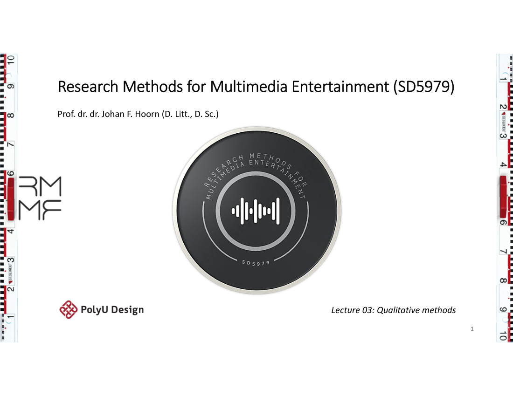
多媒体娱乐研究方法（SD5979）
Prof. dr. dr. Johan F. Hoorn (D. Litt., D. Sc.)
第 3 讲：质性方法（Qualitative methods）
英文检索原文（公式与版式请看左侧原图）
Research Methods for Multimedia Entertainment (SD5979) Prof. dr. dr. Johan F. Hoorn (D. Litt., D. Sc.) Lecture 03: Qualitative methods 1

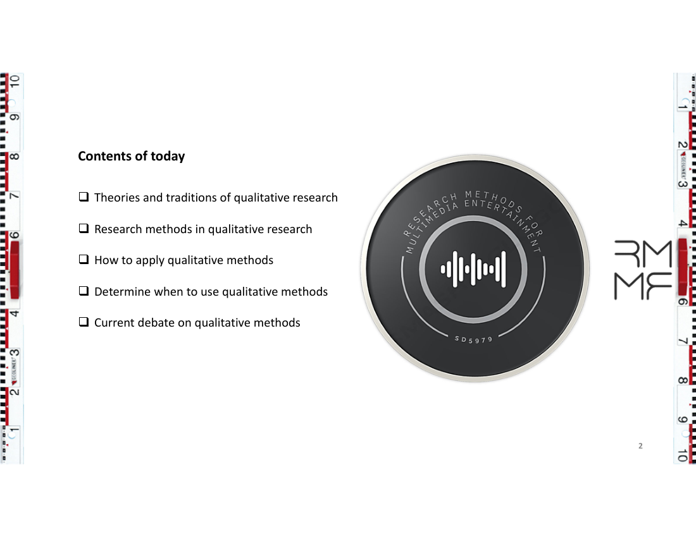
今日内容
- 质性研究（qualitative research）的理论与传统
- 质性研究（qualitative research）中的研究方法（Research methods）
- 如何应用质性方法（qualitative methods）
- 确定何时使用质性方法（qualitative methods）
- 关于质性方法（qualitative methods）的当前争论
英文检索原文（公式与版式请看左侧原图）
2 Contents of today Theories and traditions of qualitative research Research methods in qualitative research How to apply qualitative methods Determine when to use qualitative methods Current debate on qualitative methods

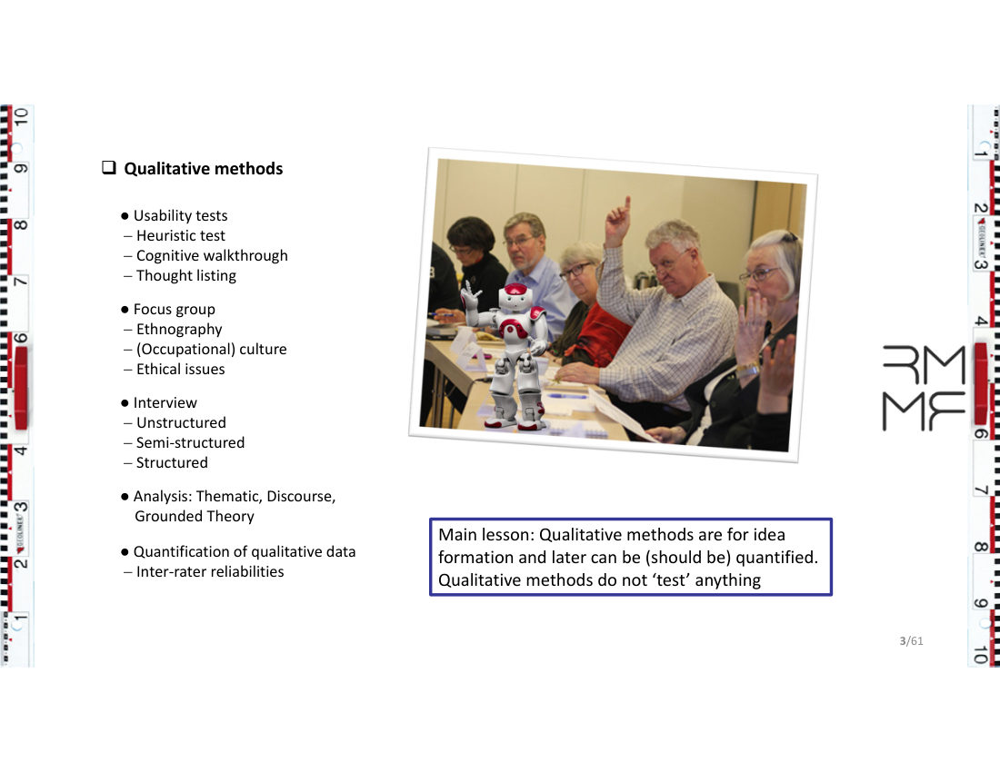
质性方法（Qualitative methods）
- 可用性测试（Usability tests）
- 启发式测试（Heuristic test）
- 认知走查（Cognitive walkthrough）
- 想法列举（Thought listing）
- 焦点小组（Focus group）
- 民族志（Ethnography）
- （职业）文化（(Occupational) culture）
- 伦理问题（Ethical issues）
- 访谈（Interview）
- 非结构式（Unstructured）
- 半结构式（Semi-structured）
- 结构式（Structured）
- 分析：主题分析（Thematic）、话语分析（Discourse）、扎根理论（Grounded Theory）
- 质性数据的量化（Quantification of qualitative data）
- 评分者间信度（Inter-rater reliabilities）
核心结论（Main lesson）：质性方法（Qualitative methods）用于形成想法，并且之后可以（也应该）被量化（quantified）。质性方法（Qualitative methods）并不「检验（test）」任何东西。
英文检索原文（公式与版式请看左侧原图）
Qualitative methods ●Usability tests Heuristic test Cognitive walkthrough Thought listing ●Focus group Ethnography (Occupational) culture Ethical issues ●Interview Unstructured Semi-structured Structured ●Analysis: Thematic, Discourse, Grounded Theory ●Quantification of qualitative data Inter-rater reliabilities Main lesson: Qualitative methods are for idea formation and later can be (should be) quantified. Qualitative methods do not ‘test’ anything 3/61

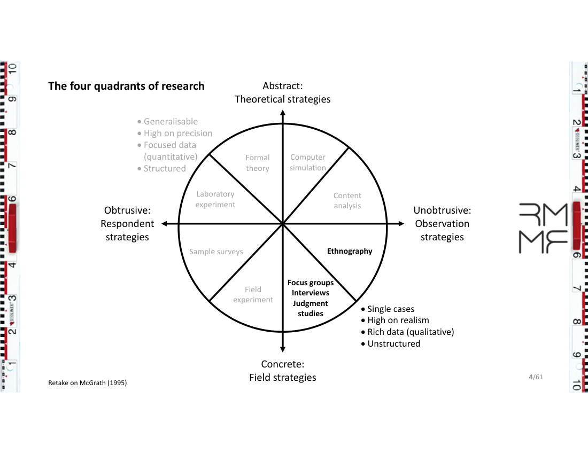
研究的四个象限（The four quadrants of research）
- 维度标签：
- 具体（Concrete）：实地策略（Field strategies）
- 抽象（Abstract）：理论策略（Theoretical strategies）
- 干扰性（Obtrusive）：受访者策略（Respondent strategies）
- 非干扰性（Unobtrusive）：观察策略（Observation strategies）
- 象限中的研究策略与方法：
- 实验室实验（Laboratory experiment）、抽样调查（Sample surveys）、判断研究（Judgment studies）
- 实地实验（Field experiment）、焦点小组（Focus groups）、访谈（Interviews）
- 民族志（Ethnography）、内容分析（Content analysis）
- 形式理论（Formal theory）、计算机模拟（Computer simulation）
- 特征对比：
- 偏具体／质性一侧：
- 单一案例（Single cases）
- 高真实性（realism）
- 丰富数据（Rich data）（质性（qualitative））
- 非结构化（Unstructured）
- 偏抽象／量化一侧：
- 可推广性（Generalisable）
- 高精确度（precision）
- 聚焦数据（Focused data）（量化（quantitative））
- 结构化（Structured）
改编自 McGrath (1995)（Retake on McGrath (1995)）
英文检索原文（公式与版式请看左侧原图）
The four quadrants of research Concrete: Field strategies Abstract: Theoretical strategies Laboratory experiment Sample surveys Obtrusive: Respondent strategies Unobtrusive: Observation strategies Formal theory Computer simulation Ethnography Content analysis Field experiment Focus groups Interviews Judgment studies Single cases High on realism Rich data (qualitative) Unstructured Generalisable High on precision Focused data (quantitative) Structured Retake on McGrath (1995) 4/61

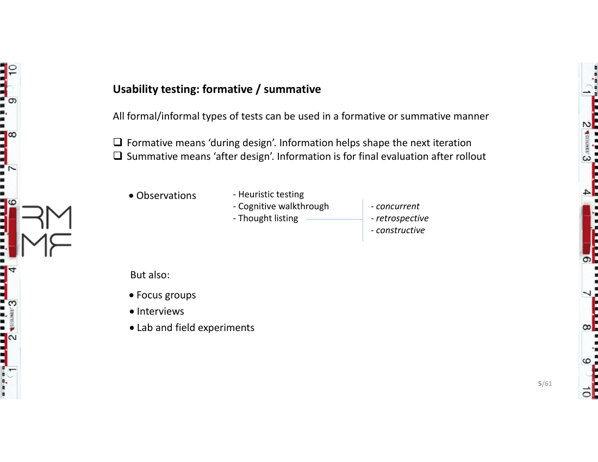
可用性测试（Usability testing）：形成性（formative） / 总结性（summative）
所有正式／非正式测试（formal/informal types of tests）都可以以形成性（formative）或总结性（summative）的方式使用
- 形成性（Formative）指「在设计过程中（during design）」。所得信息有助于塑造下一次迭代。
- 总结性（Summative）指「在设计完成后（after design）」。所得信息用于在上线发布后进行最终评估。
- 观察法（Observations）
- 启发式测试（Heuristic testing）
- 认知走查（Cognitive walkthrough）
- 想法列举（Thought listing）
- 同步式（concurrent）
- 回顾式（retrospective）
- 建构式（constructive）
但还包括：
- 焦点小组（Focus groups）
- 访谈（Interviews）
- 实验室实验与实地实验（Lab and field experiments）
英文检索原文（公式与版式请看左侧原图）
All formal/informal types of tests can be used in a formative or summative manner Formative means ‘during design’. Information helps shape the next iteration Summative means ‘after design’. Information is for final evaluation after rollout Observations Focus groups Interviews Lab and field experiments - Heuristic testing - Cognitive walkthrough - Thought listing - concurrent - retrospective - constructive Usability testing: formative / summative But also: 5/61

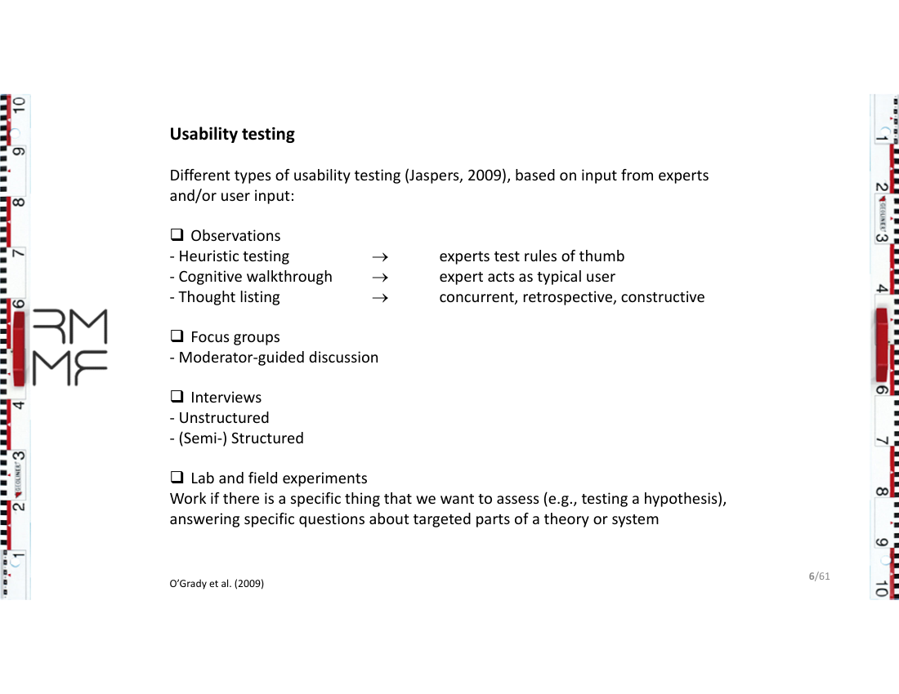
可用性测试（Usability testing）
基于专家输入和／或用户输入的不同类型可用性测试（usability testing）（Jaspers, 2009）：
- 观察法（Observations）
- 启发式测试（Heuristic testing） → 专家检验经验法则
- 认知走查（Cognitive walkthrough） → 专家扮演典型用户
- 想法列举（Thought listing） → 同步式（concurrent）、回顾式（retrospective）、建构式（constructive）
- 焦点小组（Focus groups）
- 主持人引导的讨论（Moderator-guided discussion）
- 访谈（Interviews）
- 非结构式（Unstructured）
- （半）结构式（(Semi-) Structured）
- 实验室实验与实地实验（Lab and field experiments）
- 当我们有想要评估的具体对象（例如检验假设（testing a hypothesis））、回答关于理论（theory）或系统特定部分的专门问题时适用
O’Grady et al. (2009)
英文检索原文（公式与版式请看左侧原图）
Different types of usability testing (Jaspers, 2009), based on input from experts and/or user input: Observations - Heuristic testing experts test rules of thumb - Cognitive walkthrough expert acts as typical user - Thought listing concurrent, retrospective, constructive Focus groups - Moderator-guided discussion Interviews - Unstructured - (Semi-) Structured Lab and field experiments Work if there is a specific thing that we want to assess (e.g., testing a hypothesis), answering specific questions about targeted parts of a theory or system O’Grady et al. (2009) Usability testing 6/61

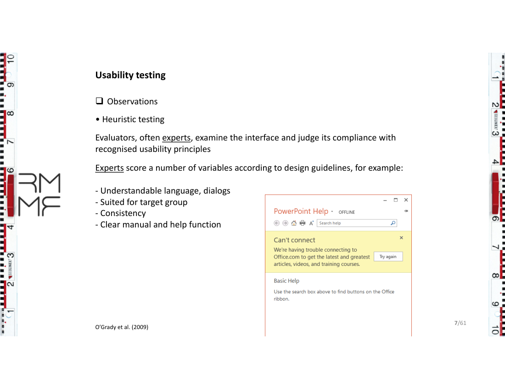
可用性测试（Usability testing）
- 观察法（Observations）
- 启发式测试（Heuristic testing）
评估者（通常是专家）检查界面，并判断其是否符合公认的可用性原则（usability principles）。
专家根据设计指南对一系列变量（variables）进行评分，例如：
- 易于理解的语言、对话
- 适合目标群体
- 一致性
- 清晰的手册与帮助功能
O’Grady et al. (2009)
英文检索原文（公式与版式请看左侧原图）
Usability testing Observations • Heuristic testing Evaluators, often experts, examine the interface and judge its compliance with recognised usability principles Experts score a number of variables according to design guidelines, for example: - Understandable language, dialogs - Suited for target group - Consistency - Clear manual and help function O’Grady et al. (2009) 7/61

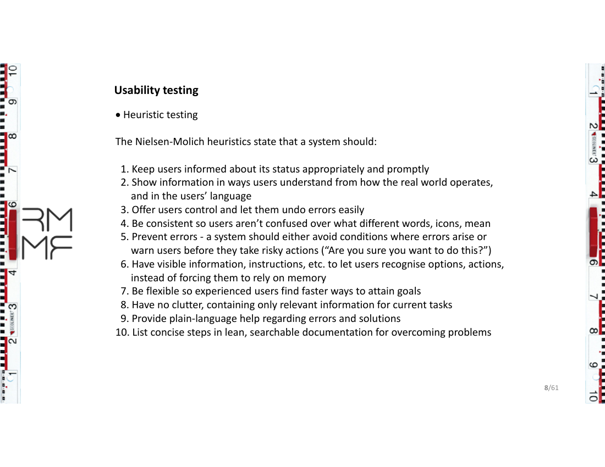
可用性测试（Usability testing）
- 启发式测试（Heuristic testing）
尼尔森—莫利希启发式原则（Nielsen-Molich heuristics）指出，一个系统应当：
- 适时、恰当地让用户了解其状态
- 以用户根据现实世界运作方式能够理解的形式，并使用用户的语言来展示信息
- 为用户提供控制权，并使其能够轻松撤销错误
- 保持一致性，使用户不会对不同词语、图标的含义感到困惑
- 预防错误——系统应避免出现容易引发错误的情境，或在用户执行有风险的操作前发出警告（「您确定要执行此操作吗？」）
- 让信息、指引等保持可见，使用户能够识别选项与操作，而不是强迫其依赖记忆
- 具备灵活性，使有经验的用户能找到更快捷的方式达成目标
- 界面无杂乱元素，仅包含与当前任务相关的信息
- 用通俗易懂的语言提供有关错误及解决方案的帮助
- 在精简且可检索的文档中列出简明步骤，以帮助克服遇到的问题
英文检索原文（公式与版式请看左侧原图）
Usability testing Heuristic testing The Nielsen-Molich heuristics state that a system should: 1. Keep users informed about its status appropriately and promptly 2. Show information in ways users understand from how the real world operates, and in the users’ language 3. Offer users control and let them undo errors easily 4. Be consistent so users aren’t confused over what different words, icons, mean 5. Prevent errors - a system should either avoid conditions where errors arise or warn users before they take risky actions (“Are you sure you want to do this?”) 6. Have visible information, instructions, etc. to let users recognise options, actions, instead of forcing them to rely on memory 7. Be flexible so experienced users find faster ways to attain goals 8. Have no clutter, containing only relevant information for current tasks 9. Provide plain-language help regarding errors and solutions 10. List concise steps in lean, searchable documentation for overcoming problems 8/61

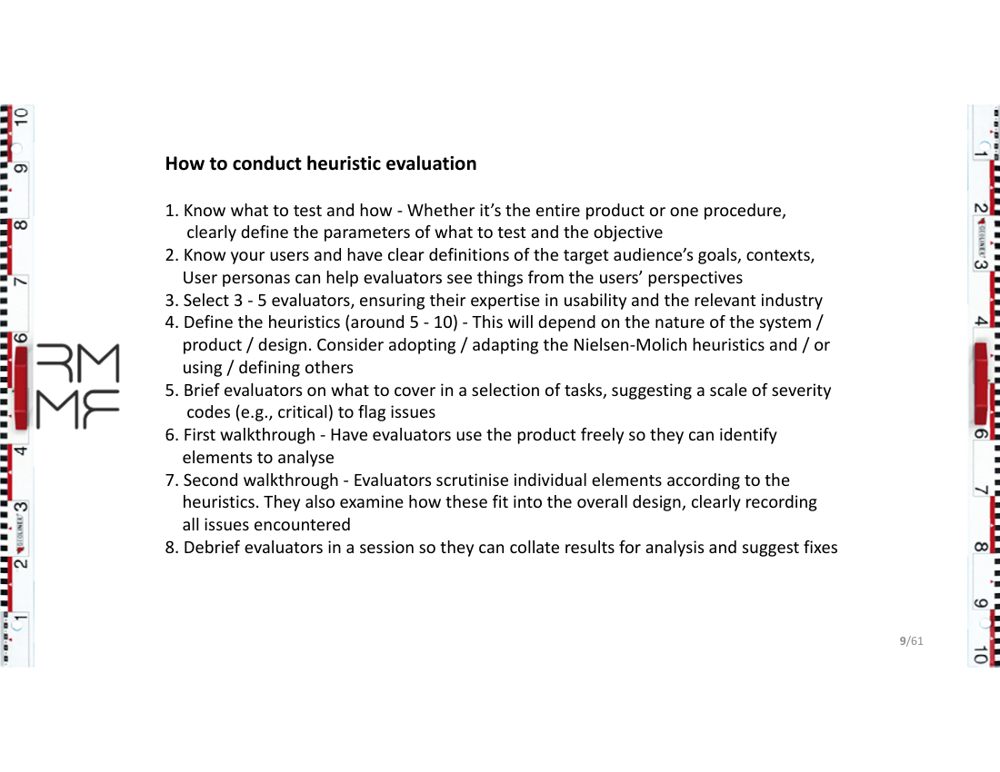
如何开展启发式评估（heuristic evaluation）
- 明确测试内容与方式——无论是整个产品还是单一流程，都要清晰界定测试的参数（parameters）与目标
- 了解你的用户，并清晰界定目标受众的目标与使用情境；用户画像（User personas）可以帮助评估者从用户视角看待问题
- 挑选 3–5 名评估者，确保他们在可用性（usability）及相关行业方面具备专业知识
- 确定启发式原则（heuristics）（约 5–10 条）——这将取决于系统／产品／设计的性质。可考虑采用／调整尼尔森—莫利希启发式原则（Nielsen-Molich heuristics），和／或使用／定义其他原则
- 向评估者简要说明一组选定任务中需要涵盖的内容，并建议采用一套严重程度编码量表（scale of severity codes）（例如：严重）来标记问题
- 第一次走查（walkthrough）——让评估者自由使用产品，以便他们识别需要分析的元素
- 第二次走查（walkthrough）——评估者依据启发式原则（heuristics）仔细审查各个单独元素，同时考察它们如何融入整体设计，并清晰记录所有遇到的问题
- 召开评估者事后汇总会谈（Debrief），以便汇总结果进行分析（analysis）并提出修改建议
英文检索原文（公式与版式请看左侧原图）
How to conduct heuristic evaluation 1. Know what to test and how - Whether it’s the entire product or one procedure, clearly define the parameters of what to test and the objective 2. Know your users and have clear definitions of the target audience’s goals, contexts, User personas can help evaluators see things from the users’ perspectives 3. Select 3 - 5 evaluators, ensuring their expertise in usability and the relevant industry 4. Define the heuristics (around 5 - 10) - This will depend on the nature of the system / product / design. Consider adopting / adapting the Nielsen-Molich heuristics and / or using / defining others 5. Brief evaluators on what to cover in a selection of tasks, suggesting a scale of severity codes (e.g., critical) to flag issues 6. First walkthrough - Have evaluators use the product freely so they can identify elements to analyse 7. Second walkthrough - Evaluators scrutinise individual elements according to the heuristics. They also examine how these fit into the overall design, clearly recording all issues encountered 8. Debrief evaluators in a session so they can collate results for analysis and suggest fixes 9/61

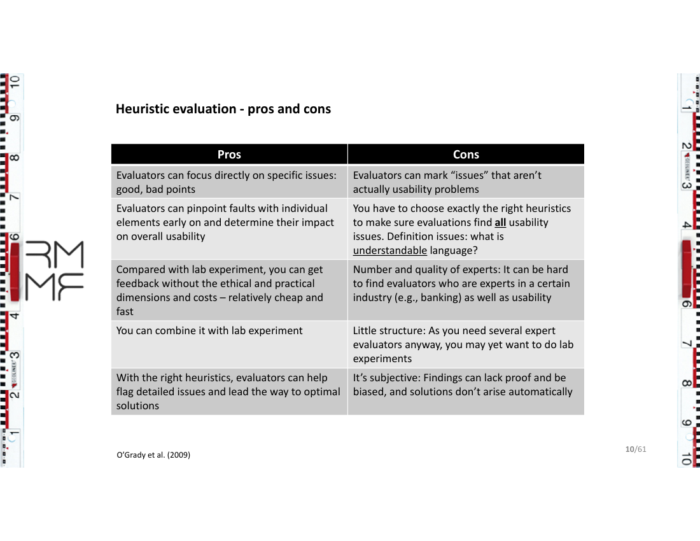
启发式评估（Heuristic evaluation）——优点与缺点
优点（Pros）
- 评估者可以直接聚焦于具体问题：优点与缺点
- 评估者能够尽早精准定位单个元素的缺陷，并判断其对整体可用性（usability）的影响
- 与实验室实验（lab experiment）相比，无需面对伦理（ethical）与实际操作层面的顾虑及成本即可获得反馈——相对便宜且快速
- 可以与实验室实验（lab experiment）结合使用
- 若采用恰当的启发式原则（heuristics），评估者可以帮助标记细节问题，并引导找到最优解决方案
缺点（Cons）
- 评估者可能会把实际上并非可用性问题（usability problems）的情况标记为「问题」
- 你必须选择完全恰当的启发式原则（heuristics），才能确保评估发现所有可用性问题（usability issues）。界定难题：什么才是「易于理解的语言」？
- 专家数量与质量问题：有时很难找到既精通特定行业（例如银行业）又懂可用性（usability）的评估者
- 缺乏结构性（structure）：既然无论如何都需要多名专家评估者，你可能最终还是会想做实验室实验（lab experiments）
- 具有主观性（subjective）：研究发现可能缺乏实证依据且存在偏差（biased），而且解决方案不会自动产生
O’Grady et al. (2009)
英文检索原文（公式与版式请看左侧原图）
Pros Cons Evaluators can focus directly on specific issues: good, bad points Evaluators can mark “issues” that aren’t actually usability problems Evaluators can pinpoint faults with individual elements early on and determine their impact on overall usability You have to choose exactly the right heuristics to make sure evaluations find all usability issues. Definition issues: what is understandable language? Compared with lab experiment, you can get feedback without the ethical and practical dimensions and costs – relatively cheap and fast Number and quality of experts: It can be hard to find evaluators who are experts in a certain industry (e.g., banking) as well as usability You can combine it with lab experiment Little structure: As you need several expert evaluators anyway, you may yet want to do lab experiments With the right heuristics, evaluators can help flag detailed issues and lead the way to optimal solutions It’s subjective: Findings can lack proof and be biased, and solutions don’t arise automatically Heuristic evaluation - pros and cons O’Grady et al. (2009) 10/61

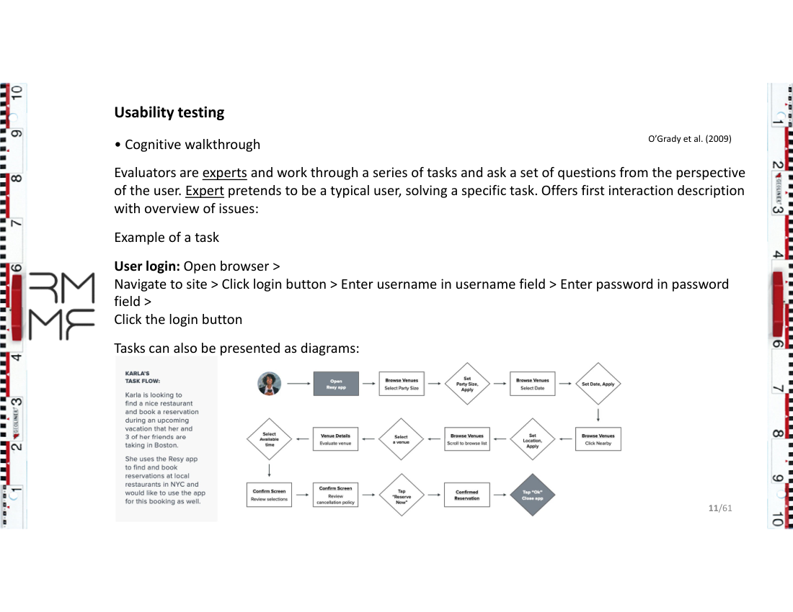
可用性测试（Usability testing）
- 认知走查（Cognitive walkthrough）
评估者是专家，他们从用户的视角出发完成一系列任务并提出一组问题。专家假装自己是典型用户，去解决某项特定任务。该方法能提供初步的交互描述及问题概览：
任务示例（Example of a task）
用户登录：打开浏览器 > 导航至网站 > 点击登录按钮 > 在用户名栏输入用户名 > 在密码栏输入密码 > 点击登录按钮
任务也可以以图表的形式呈现：
O’Grady et al. (2009)
英文检索原文（公式与版式请看左侧原图）
Usability testing • Cognitive walkthrough Evaluators are experts and work through a series of tasks and ask a set of questions from the perspective of the user. Expert pretends to be a typical user, solving a specific task. Offers first interaction description with overview of issues: Example of a task User login: Open browser > Navigate to site > Click login button > Enter username in username field > Enter password in password field > Click the login button Tasks can also be presented as diagrams: O’Grady et al. (2009) 11/61

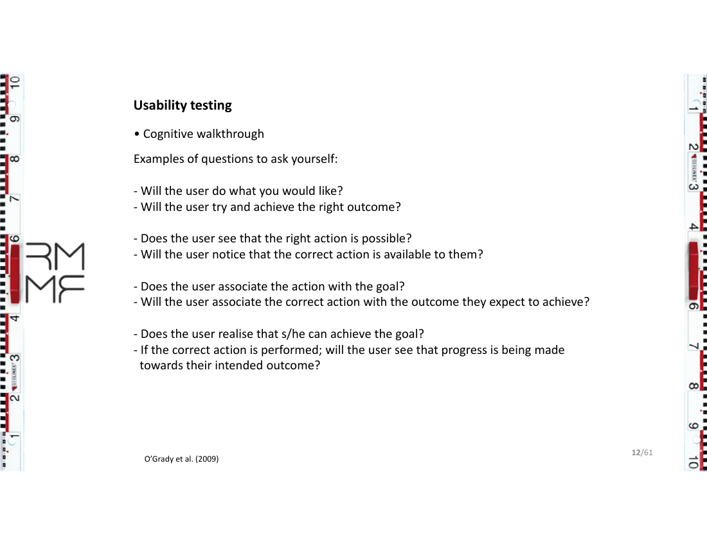
可用性测试（Usability testing）
- 认知走查（Cognitive walkthrough）
可以问自己的问题示例：
- 用户会做出你希望他们做的操作吗？
- 用户会尝试并达成正确的结果吗？
- 用户能看出正确操作是可行的吗？
- 用户会注意到他们可以使用该正确操作吗？
- 用户会将该操作与目标联系起来吗？
- 用户会将正确操作与他们期望达成的结果联系起来吗？
- 用户会意识到自己能够实现该目标吗？
- 如果执行了正确操作，用户会看到自己正在朝着预期结果取得进展吗？
O’Grady et al. (2009)
英文检索原文（公式与版式请看左侧原图）
Usability testing • Cognitive walkthrough Examples of questions to ask yourself: - Will the user do what you would like? - Will the user try and achieve the right outcome? - Does the user see that the right action is possible? - Will the user notice that the correct action is available to them? - Does the user associate the action with the goal? - Will the user associate the correct action with the outcome they expect to achieve? - Does the user realise that s/he can achieve the goal? - If the correct action is performed; will the user see that progress is being made towards their intended outcome? O’Grady et al. (2009) 12/61

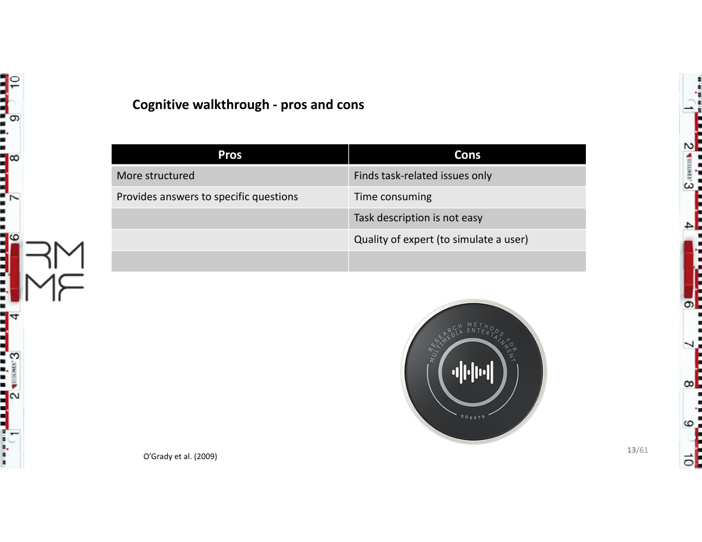
认知走查（Cognitive walkthrough）——优缺点
优点（Pros）
- 更加结构化
- 为具体问题提供答案
缺点（Cons）
- 仅能发现与任务相关的问题
- 耗时
- 任务描述并不容易
- 专家的质量（用于模拟用户）
O’Grady et al. (2009)
英文检索原文（公式与版式请看左侧原图）
Pros Cons More structured Finds task-related issues only Provides answers to specific questions Time consuming Task description is not easy Quality of expert (to simulate a user) Cognitive walkthrough - pros and cons O’Grady et al. (2009) 13/61

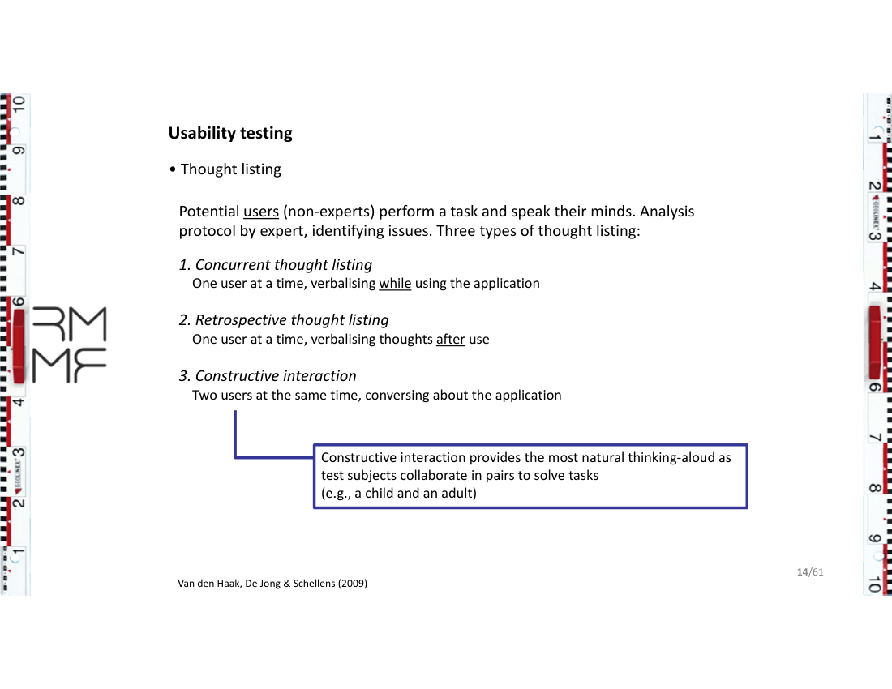
可用性测试（Usability testing）
- 想法列举（Thought listing）
潜在用户（非专家）执行一项任务并说出自己的想法。由专家依据分析规程（Analysis protocol）进行分析，以识别问题。想法列举（thought listing）有三种类型：
- 同步想法列举（Concurrent thought listing）
每次一位用户，在使用应用程序的同时进行口头表达
- 回顾性想法列举（Retrospective thought listing）
每次一位用户，在使用之后口头表达想法
- 建构性互动（Constructive interaction）
同时有两位用户，就该应用程序展开对话
Van den Haak, De Jong & Schellens (2009)
建构性互动（Constructive interaction）提供了最自然的出声思考（thinking-aloud）方式，因为测试被试（test subjects）两两协作来解决任务（例如，一名儿童和一名成人）。
英文检索原文（公式与版式请看左侧原图）
Usability testing • Thought listing Potential users (non-experts) perform a task and speak their minds. Analysis protocol by expert, identifying issues. Three types of thought listing: 1. Concurrent thought listing One user at a time, verbalising while using the application 2. Retrospective thought listing One user at a time, verbalising thoughts after use 3. Constructive interaction Two users at the same time, conversing about the application Van den Haak, De Jong & Schellens (2009) Constructive interaction provides the most natural thinking-aloud as test subjects collaborate in pairs to solve tasks (e.g., a child and an adult) 14/61

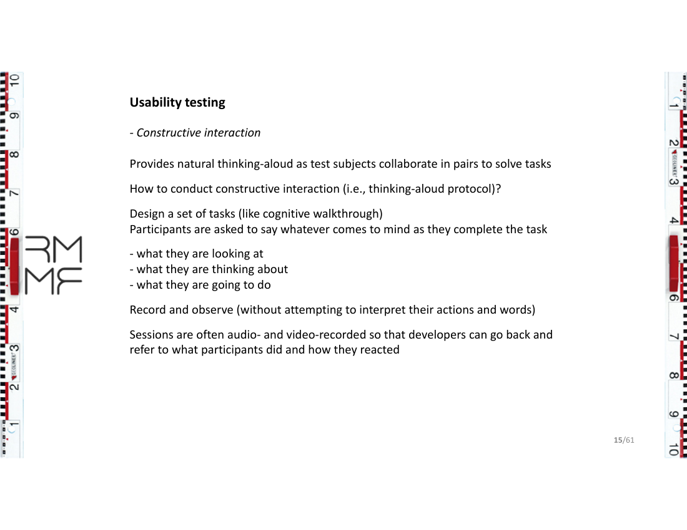
可用性测试（Usability testing）
- 建构性互动（Constructive interaction）
由于测试被试（test subjects）两两协作解决任务，该方法提供了自然的出声思考（thinking-aloud）。
如何开展建构性互动（constructive interaction）（即出声思考法（thinking-aloud protocol））？
- 设计一组任务（类似于认知走查（cognitive walkthrough））
- 要求参与者在完成任务的过程中说出脑海里想到的任何内容：
- 他们正在看什么
- 他们正在想什么
- 他们接下来打算做什么
- 进行记录与观察（不要试图去解释他们的行为和话语）
- 过程通常会进行音频和视频录制，以便开发者后续回看并参考参与者的实际操作与反应
英文检索原文（公式与版式请看左侧原图）
- Constructive interaction Provides natural thinking-aloud as test subjects collaborate in pairs to solve tasks How to conduct constructive interaction (i.e., thinking-aloud protocol)? Design a set of tasks (like cognitive walkthrough) Participants are asked to say whatever comes to mind as they complete the task - what they are looking at - what they are thinking about - what they are going to do Record and observe (without attempting to interpret their actions and words) Sessions are often audio- and video-recorded so that developers can go back and refer to what participants did and how they reacted Usability testing 15/61

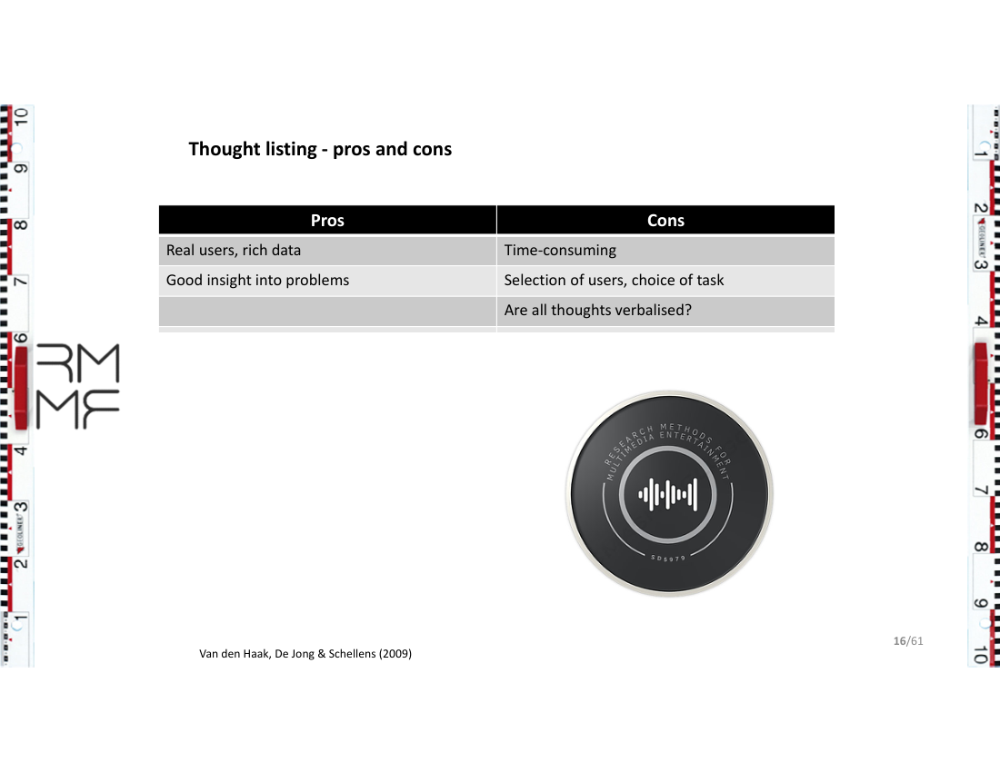
想法列举（Thought listing）——优缺点
优点（Pros）
- 真实用户，数据丰富
- 能深入洞察问题
缺点（Cons）
- 耗时
- 用户的选择、任务的选择
- 所有的想法都会被口头表达出来吗？
Van den Haak, De Jong & Schellens (2009)
英文检索原文（公式与版式请看左侧原图）
Van den Haak, De Jong & Schellens (2009) Thought listing - pros and cons Pros Cons Real users, rich data Time-consuming Good insight into problems Selection of users, choice of task Are all thoughts verbalised? 16/61

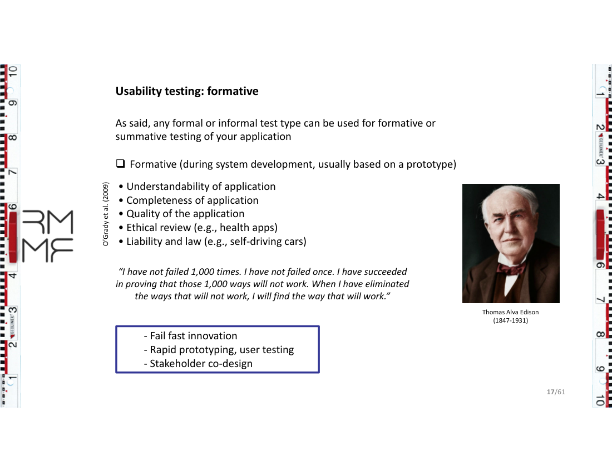
可用性测试（Usability testing）：形成性测试（formative）
如前所述，任何正式或非正式的测试类型都可用于对你的应用程序进行形成性测试（formative）或总结性测试（summative testing）。
- 形成性测试（Formative）（在系统开发期间进行，通常基于原型（prototype））
- 应用程序的可理解性
- 应用程序的完整性
- 应用程序的质量
- 伦理审查（Ethical review）（例如，健康类应用）
- 责任与法律（例如，自动驾驶汽车）
O’Grady et al. (2009)
Thomas Alva Edison (1847-1931)
“我并没有失败 1,000 次。我一次也没有失败。我成功地证明了那 1,000 种方法行不通。当我排除了所有行不通的方法后，我就会找到行得通的方法。”
- 快速试错创新（Fail fast innovation）
- 快速原型制作（Rapid prototyping）、用户测试（user testing）
- 利益相关者协同设计（Stakeholder co-design）
英文检索原文（公式与版式请看左侧原图）
Usability testing: formative As said, any formal or informal test type can be used for formative or summative testing of your application Formative (during system development, usually based on a prototype) • Understandability of application • Completeness of application • Quality of the application • Ethical review (e.g., health apps) • Liability and law (e.g., self-driving cars) O’Grady et al. (2009) Thomas Alva Edison (1847-1931) “I have not failed 1,000 times. I have not failed once. I have succeeded in proving that those 1,000 ways will not work. When I have eliminated the ways that will not work, I will find the way that will work.” - Fail fast innovation - Rapid prototyping, user testing - Stakeholder co-design 17/61

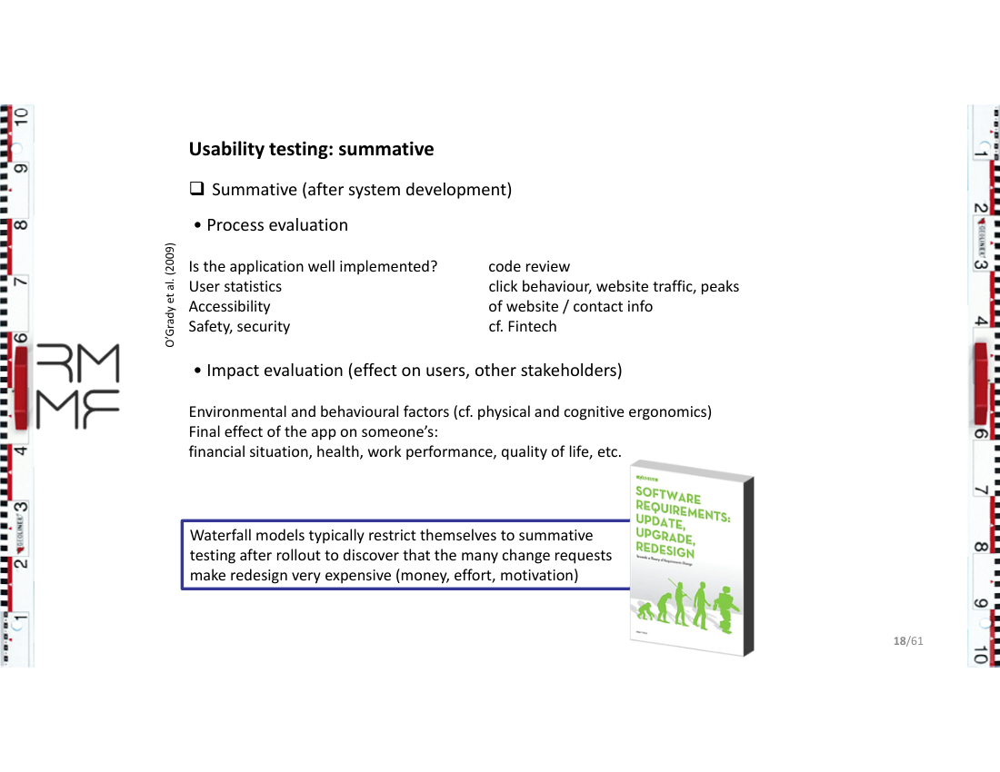
可用性测试（Usability testing）：总结性测试（summative）
- 总结性测试（Summative）（在系统开发之后进行）
- 过程评估（Process evaluation）
- 应用程序是否得到了良好实施？
- 代码审查（code review）
- 用户统计数据：点击行为、网站流量、峰值
- 网站／联系信息的无障碍性（Accessibility）
- 安全性、信息安全（参见 Fintech）
- 影响评估（Impact evaluation）（对用户及其他利益相关者的影响）
- 环境与行为因素（参见身体与认知工效学（physical and cognitive ergonomics））
- 应用程序对个人以下方面的最终影响：财务状况、健康、工作表现、生活质量等
O’Grady et al. (2009)
瀑布模型（Waterfall models）通常局限于在上线后才进行总结性测试（summative testing），结果却发现大量的修改请求使得重新设计变得非常昂贵（金钱、精力、动力）。
英文检索原文（公式与版式请看左侧原图）
Summative (after system development) • Process evaluation Is the application well implemented? code review User statistics click behaviour, website traffic, peaks Accessibility of website / contact info Safety, security cf. Fintech • Impact evaluation (effect on users, other stakeholders) Environmental and behavioural factors (cf. physical and cognitive ergonomics) Final effect of the app on someone’s: financial situation, health, work performance, quality of life, etc. O’Grady et al. (2009) Usability testing: summative Waterfall models typically restrict themselves to summative testing after rollout to discover that the many change requests make redesign very expensive (money, effort, motivation) 18/61

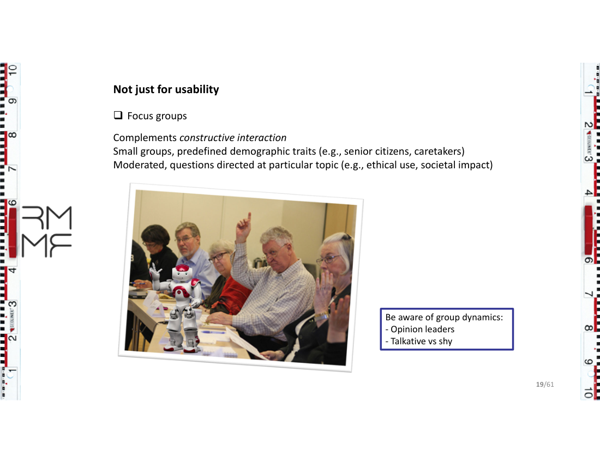
焦点小组（Focus groups）
- 焦点小组（Focus groups）
- 作为建构性互动（constructive interaction）的补充
- 小型群体，具有预先设定的人口统计学特征（demographic traits）（例如老年人、照护者）
- 由主持人引导（Moderated），问题聚焦于特定主题（例如伦理使用、社会影响）
- 不仅适用于可用性（usability）测试
- 需注意群体动力学（group dynamics）：
- 意见领袖（Opinion leaders）
- 健谈者 vs 害羞者
英文检索原文（公式与版式请看左侧原图）
Focus groups Complements constructive interaction Small groups, predefined demographic traits (e.g., senior citizens, caretakers) Moderated, questions directed at particular topic (e.g., ethical use, societal impact) Not just for usability Be aware of group dynamics: - Opinion leaders - Talkative vs shy 19/61

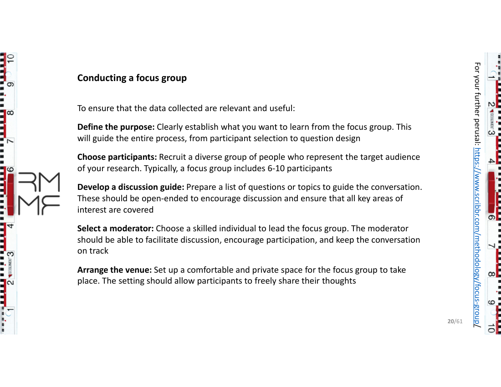
开展焦点小组（focus group）
供进一步参考阅读：https://www.scribbr.com/methodology/focus-group/
为确保收集到的数据具有相关性且有用：
- 明确目的：清晰确定你想从焦点小组（focus group）中了解什么。这将指导从参与者筛选到问题设计的整个过程
- 选择参与者：招募一群具有代表性的多样化人群，代表你研究的目标受众。通常，一个焦点小组（focus group）包含 6–10 名参与者
- 制定讨论提纲（discussion guide）：准备一份用于引导对话的问题或主题清单。这些问题应为开放式问题（open-ended），以鼓励讨论并确保涵盖所有关注的关键领域
- 选择主持人（moderator）：挑选一位经验丰富的人员来主导焦点小组（focus group）。主持人（moderator）应能够促进讨论、鼓励参与，并使对话保持在正轨上
- 安排场地：为焦点小组（focus group）的开展布置一个舒适且私密的空间。环境布置应能让参与者自由地分享想法
英文检索原文（公式与版式请看左侧原图）
For your further perusal: https://www.scribbr.com/methodology/focus-group/ To ensure that the data collected are relevant and useful: Define the purpose: Clearly establish what you want to learn from the focus group. This will guide the entire process, from participant selection to question design Choose participants: Recruit a diverse group of people who represent the target audience of your research. Typically, a focus group includes 6-10 participants Develop a discussion guide: Prepare a list of questions or topics to guide the conversation. These should be open-ended to encourage discussion and ensure that all key areas of interest are covered Select a moderator: Choose a skilled individual to lead the focus group. The moderator should be able to facilitate discussion, encourage participation, and keep the conversation on track Arrange the venue: Set up a comfortable and private space for the focus group to take place. The setting should allow participants to freely share their thoughts Conducting a focus group 20/61

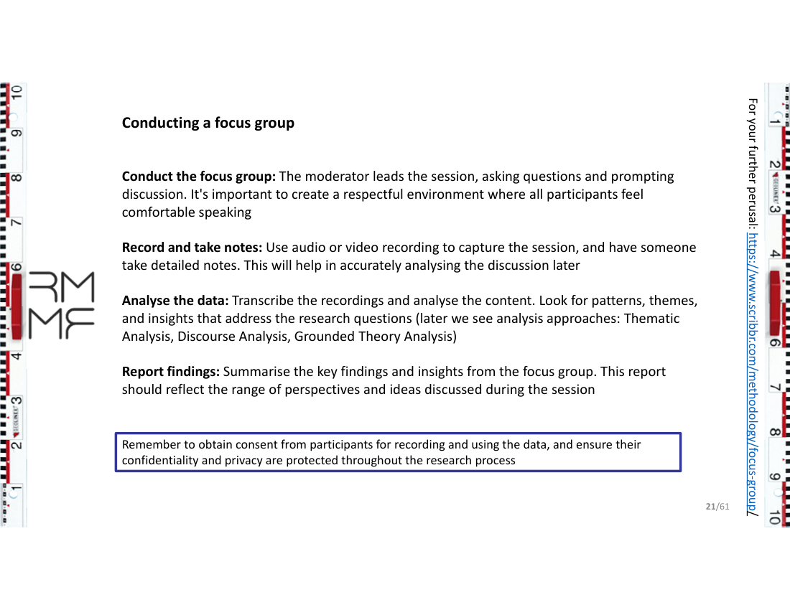
开展焦点小组（focus group）
供进一步参考阅读：https://www.scribbr.com/methodology/focus-group/
- 开展焦点小组（focus group）：由主持人（moderator）主导整场讨论，提出问题并激发讨论。营造一个让所有参与者都能自在发言、互相尊重的环境非常重要
- 记录与做笔记：使用录音或录像记录整个过程，并安排专人做好详细笔记。这有助于后续准确分析讨论内容
- 分析数据：转录（Transcribe）录音内容并进行分析。寻找能够回应研究问题（research questions）的模式、主题与洞见（后续我们将学习几种分析方法：主题分析（Thematic Analysis）、话语分析（Discourse Analysis）、扎根理论分析（Grounded Theory Analysis））
- 报告发现：总结来自焦点小组（focus group）的关键发现与洞见。该报告应反映讨论过程中所涉及的多元视角与观点
请记得就录制与使用数据获得参与者的知情同意（consent），并确保在整个研究过程中保护他们的保密性（confidentiality）与隐私（privacy）。
英文检索原文（公式与版式请看左侧原图）
Conduct the focus group: The moderator leads the session, asking questions and prompting discussion. It's important to create a respectful environment where all participants feel comfortable speaking Record and take notes: Use audio or video recording to capture the session, and have someone take detailed notes. This will help in accurately analysing the discussion later Analyse the data: Transcribe the recordings and analyse the content. Look for patterns, themes, and insights that address the research questions (later we see analysis approaches: Thematic Analysis, Discourse Analysis, Grounded Theory Analysis) Report findings: Summarise the key findings and insights from the focus group. This report should reflect the range of perspectives and ideas discussed during the session Conducting a focus group For your further perusal: https://www.scribbr.com/methodology/focus-group/ Remember to obtain consent from participants for recording and using the data, and ensure their confidentiality and privacy are protected throughout the research process 21/61

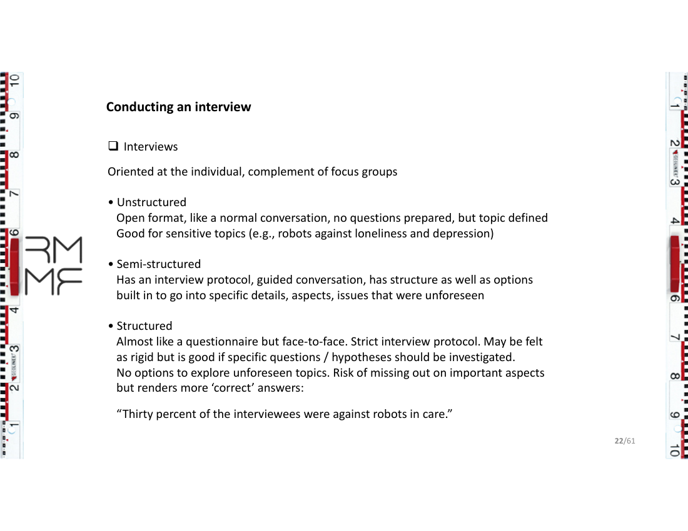
访谈（Interviews）
面向个体，是焦点小组（focus groups）的补充
- 非结构式访谈（Unstructured）
- 开放式形式，类似日常交谈，没有预先准备的问题，但明确了主题
- 适合探讨敏感话题（例如：用于缓解孤独和抑郁的机器人）
- 半结构式（Semi-structured）
- 备有访谈提纲（interview protocol），属于引导式交谈，既有一定结构，又内置了针对未曾预料到的具体细节、方面或问题进行深入追问的余地
- 结构式访谈（Structured）
- 几乎就像面对面进行的问卷（questionnaire）。拥有严格的访谈提纲（interview protocol）。可能会让人觉得刻板，但如果旨在考察特定问题／假设（hypotheses），这种方法非常有效。
- 没有探讨未预料话题的空间。存在遗漏重要方面的风险，但能产出更多「正确」的答案：
- 「30% 的受访者反对在护理中使用机器人。」
进行访谈（interview）
英文检索原文（公式与版式请看左侧原图）
Interviews Oriented at the individual, complement of focus groups • Unstructured Open format, like a normal conversation, no questions prepared, but topic defined Good for sensitive topics (e.g., robots against loneliness and depression) • Semi-structured Has an interview protocol, guided conversation, has structure as well as options built in to go into specific details, aspects, issues that were unforeseen • Structured Almost like a questionnaire but face-to-face. Strict interview protocol. May be felt as rigid but is good if specific questions / hypotheses should be investigated. No options to explore unforeseen topics. Risk of missing out on important aspects but renders more ‘correct’ answers: “Thirty percent of the interviewees were against robots in care.” Conducting an interview 22/61

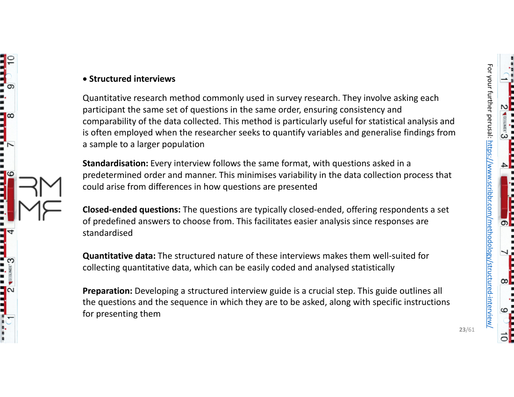
结构式访谈（Structured interviews）
常用于调查研究（survey research）的量化研究方法（quantitative research method）。这类方法向每位参与者以相同顺序提出相同的一组问题，从而确保所收集数据的一致性（consistency）与可比性（comparability）。该方法对统计分析（statistical analysis）尤为有用，通常在研究者希望将变量（variables）量化（quantify）并将研究发现从样本（sample）推广（generalise）到更大总体（population）时采用。
- 标准化（Standardisation）：每次访谈（interview）都遵循相同的格式，问题按照预先设定的顺序和方式提出。这最大限度地减少了数据收集（data collection）过程中因问题呈现方式不同而可能产生的变异性（variability）。
- 封闭式问题（Closed-ended questions）：问题通常是封闭式的，为受访者提供一组预先定义好的答案供其选择。由于回答已实现标准化（standardised），这有助于更轻松地进行分析。
- 量化数据（Quantitative data）：此类访谈的结构化特性使其非常适合收集量化数据，这类数据易于进行编码（coded）和统计分析。
- 准备：制定一份结构式访谈指南（structured interview guide）是至关重要的一步。该指南列出了所有问题及提问顺序，并附有关于如何呈现这些问题的具体说明。
延伸阅读参考：https://www.scribbr.com/methodology/structured-interview/
英文检索原文（公式与版式请看左侧原图）
Structured interviews Quantitative research method commonly used in survey research. They involve asking each participant the same set of questions in the same order, ensuring consistency and comparability of the data collected. This method is particularly useful for statistical analysis and is often employed when the researcher seeks to quantify variables and generalise findings from a sample to a larger population Standardisation: Every interview follows the same format, with questions asked in a predetermined order and manner. This minimises variability in the data collection process that could arise from differences in how questions are presented Closed-ended questions: The questions are typically closed-ended, offering respondents a set of predefined answers to choose from. This facilitates easier analysis since responses are standardised Quantitative data: The structured nature of these interviews makes them well-suited for collecting quantitative data, which can be easily coded and analysed statistically Preparation: Developing a structured interview guide is a crucial step. This guide outlines all the questions and the sequence in which they are to be asked, along with specific instructions for presenting them For your further perusal: https://www.scribbr.com/methodology/structured-interview/ 23/61

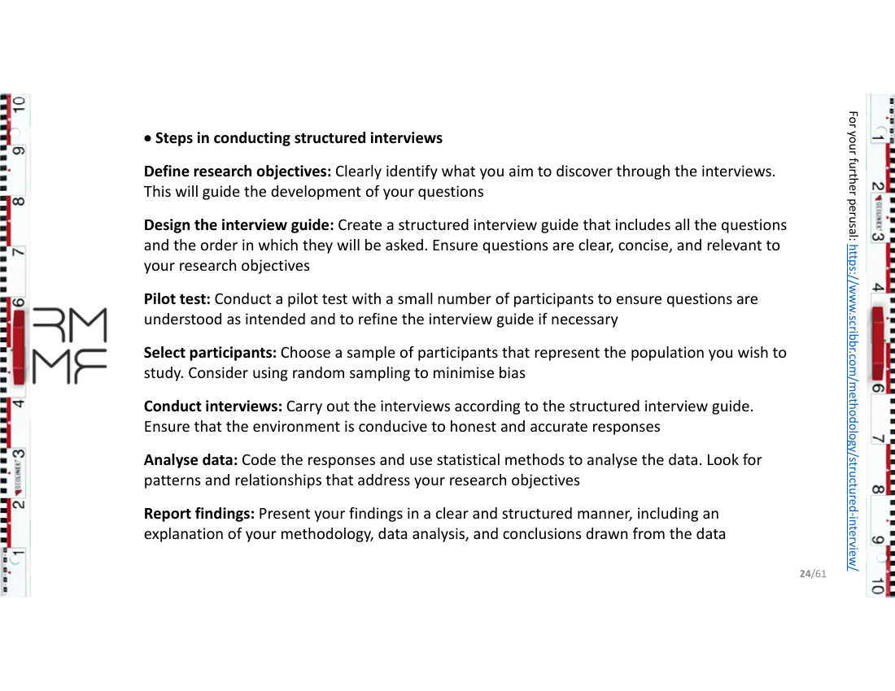
延伸阅读参考：https://www.scribbr.com/methodology/structured-interview/
开展结构式访谈（structured interviews）的步骤
- 明确研究目标（research objectives）：清晰界定你希望通过访谈发现什么。这将指导你问题的设计。
- 设计访谈指南（interview guide）：创建一份结构式访谈指南（structured interview guide），包含所有问题及提问顺序。确保问题清晰、简明，并与你的研究目标相关。
- 预测试（Pilot test）：在少量参与者中进行预测试，以确保问题能按预期被理解，并在必要时完善访谈指南。
- 遴选参与者：选择一个能够代表你所研究总体（population）的参与者样本（sample）。考虑使用随机抽样（random sampling）以最大限度地减少偏差（bias）。
- 实施访谈：按照结构式访谈指南开展访谈。确保环境有利于受访者给出坦诚且准确的回答。
- 分析数据：对回答进行编码（Code），并使用统计方法（statistical methods）分析数据。寻找能够回应你研究目标的模式与关系。
- 报告发现：以清晰、有条理的方式呈现你的研究发现，包括对你的方法论（methodology）、数据分析（data analysis）以及从数据中得出之结论的说明。
英文检索原文（公式与版式请看左侧原图）
For your further perusal: https://www.scribbr.com/methodology/structured-interview/ Steps in conducting structured interviews Define research objectives: Clearly identify what you aim to discover through the interviews. This will guide the development of your questions Design the interview guide: Create a structured interview guide that includes all the questions and the order in which they will be asked. Ensure questions are clear, concise, and relevant to your research objectives Pilot test: Conduct a pilot test with a small number of participants to ensure questions are understood as intended and to refine the interview guide if necessary Select participants: Choose a sample of participants that represent the population you wish to study. Consider using random sampling to minimise bias Conduct interviews: Carry out the interviews according to the structured interview guide. Ensure that the environment is conducive to honest and accurate responses Analyse data: Code the responses and use statistical methods to analyse the data. Look for patterns and relationships that address your research objectives Report findings: Present your findings in a clear and structured manner, including an explanation of your methodology, data analysis, and conclusions drawn from the data 24/61

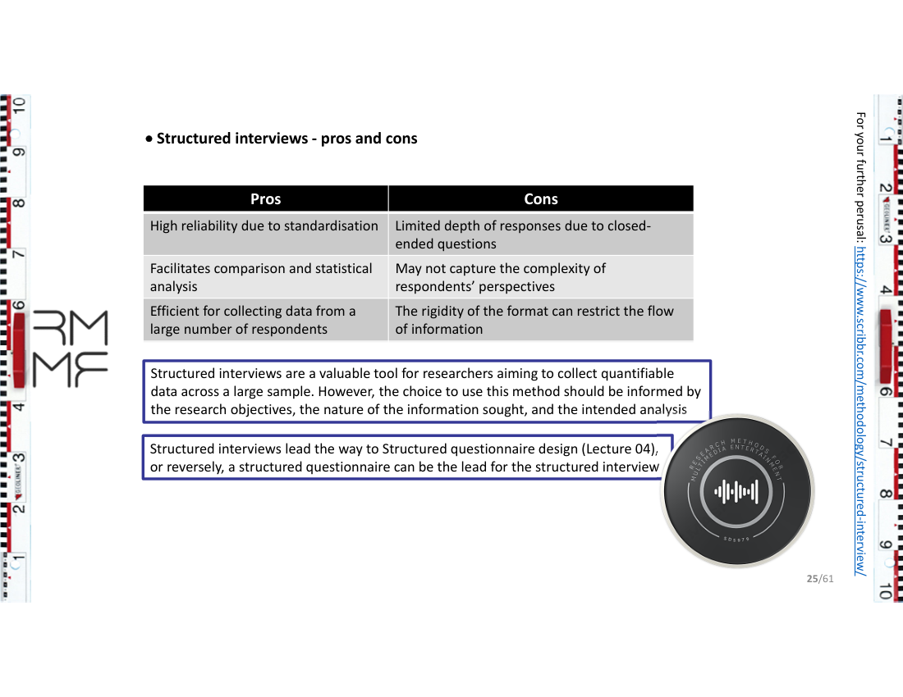
延伸阅读参考：https://www.scribbr.com/methodology/structured-interview/
结构式访谈（Structured interviews）——优缺点
- 优点（Pros）
- 因标准化（standardisation）而具有高信度（reliability）
- 便于进行比较和统计分析（statistical analysis）
- 能够高效地从大量受访者中收集数据
- 缺点（Cons）
- 由于采用封闭式问题（closed-ended questions），回答的深度有限
- 可能无法捕捉受访者观点的复杂性
- 形式的刻板可能会限制信息的流动
结构式访谈（Structured interviews）为结构化问卷设计（Structured questionnaire design）（第 04 讲）铺平了道路；或者反过来，结构化问卷（structured questionnaire）也可以作为结构式访谈的先导。
对于旨在从大样本（sample）中收集可量化数据（quantifiable data）的研究者而言，结构式访谈是一种颇具价值的工具。然而，是否选择使用该方法应取决于研究目标（research objectives）、所寻求信息的性质以及预期的分析方式。
英文检索原文（公式与版式请看左侧原图）
For your further perusal: https://www.scribbr.com/methodology/structured-interview/ Structured interviews - pros and cons Pros Cons High reliability due to standardisation Limited depth of responses due to closed- ended questions Facilitates comparison and statistical analysis May not capture the complexity of respondents’ perspectives Efficient for collecting data from a large number of respondents The rigidity of the format can restrict the flow of information Structured interviews lead the way to Structured questionnaire design (Lecture 04), or reversely, a structured questionnaire can be the lead for the structured interview Structured interviews are a valuable tool for researchers aiming to collect quantifiable data across a large sample. However, the choice to use this method should be informed by the research objectives, the nature of the information sought, and the intended analysis 25/61

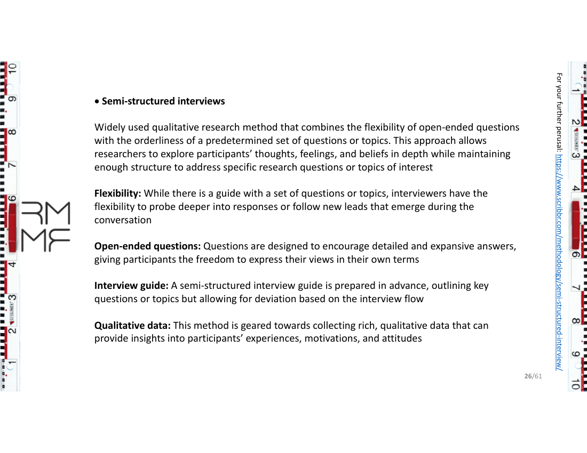
半结构式访谈（Semi-structured interviews）
一种被广泛使用的质性研究方法（qualitative research method），将开放式问题（open-ended questions）的灵活性与预先设定的一组问题或主题的条理性结合在一起。这种方法使研究者能够深入探索参与者的想法、感受和信念，同时保持足够的结构性以回应特定的研究问题（research questions）或感兴趣的主题。
- 灵活性：虽然有一份包含一组问题或主题的指南，但访谈者可以灵活地对回答进行深入追问（probe），或顺着交谈中出现的新线索继续探讨。
- 开放式问题（Open-ended questions）：问题的设计旨在鼓励受访者给出详尽且展开的回答，让参与者能够自由地用自己的话语表达观点。
- 访谈指南（Interview guide）：事先准备一份半结构式访谈指南（semi-structured interview guide），列出关键问题或主题，但允许根据访谈进程有所偏离。
- 质性数据（Qualitative data）：该方法旨在收集丰富的质性数据，从而为理解参与者的经历、动机与态度提供洞见。
延伸阅读参考：https://www.scribbr.com/methodology/semi-structured-interview/
英文检索原文（公式与版式请看左侧原图）
Semi-structured interviews Widely used qualitative research method that combines the flexibility of open-ended questions with the orderliness of a predetermined set of questions or topics. This approach allows researchers to explore participants’ thoughts, feelings, and beliefs in depth while maintaining enough structure to address specific research questions or topics of interest Flexibility: While there is a guide with a set of questions or topics, interviewers have the flexibility to probe deeper into responses or follow new leads that emerge during the conversation Open-ended questions: Questions are designed to encourage detailed and expansive answers, giving participants the freedom to express their views in their own terms Interview guide: A semi-structured interview guide is prepared in advance, outlining key questions or topics but allowing for deviation based on the interview flow Qualitative data: This method is geared towards collecting rich, qualitative data that can provide insights into participants’ experiences, motivations, and attitudes For your further perusal: https://www.scribbr.com/methodology/semi-structured-interview/ 26/61

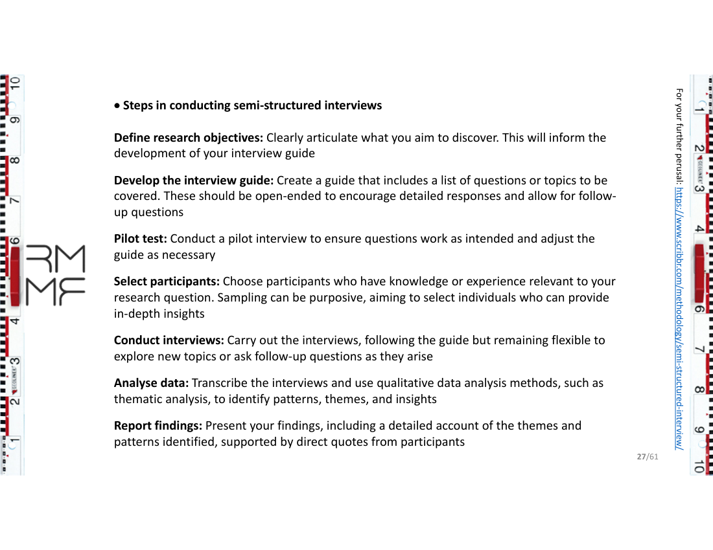
延伸阅读参考：https://www.scribbr.com/methodology/semi-structured-interview/
开展半结构式访谈（semi-structured interviews）的步骤
- 明确研究目标（research objectives）：清晰阐述你希望发现的内容。这将为制定你的访谈指南（interview guide）提供依据。
- 制定访谈指南（interview guide）：创建一份包含待涵盖问题或主题清单的指南。这些问题应当是开放式（open-ended）的，以鼓励受访者给出详尽回答并便于进行后续追问（follow-up questions）。
- 预测试（Pilot test）：进行一次试访谈（pilot interview），以确保问题能够按预期发挥作用，并在必要时调整指南。
- 遴选参与者：选择具备与你研究问题（research question）相关知识或经验的参与者。抽样（Sampling）可以采用目的抽样（purposive）的方式，旨在挑选能够提供深入洞见的个体。
- 实施访谈：开展访谈，遵循指南的同时保持灵活性，以便在出现新话题时加以探索或提出追问。
- 分析数据：对访谈内容进行转录（Transcribe），并使用质性数据分析方法（qualitative data analysis methods）（如主题分析（thematic analysis））来识别模式、主题与洞见。
- 报告发现：呈现你的研究发现，包括对所识别出的主题与模式的详细阐述，并辅以参与者的直接引语作为支撑。
英文检索原文（公式与版式请看左侧原图）
For your further perusal: https://www.scribbr.com/methodology/semi-structured-interview/ Steps in conducting semi-structured interviews Define research objectives: Clearly articulate what you aim to discover. This will inform the development of your interview guide Develop the interview guide: Create a guide that includes a list of questions or topics to be covered. These should be open-ended to encourage detailed responses and allow for follow- up questions Pilot test: Conduct a pilot interview to ensure questions work as intended and adjust the guide as necessary Select participants: Choose participants who have knowledge or experience relevant to your research question. Sampling can be purposive, aiming to select individuals who can provide in-depth insights Conduct interviews: Carry out the interviews, following the guide but remaining flexible to explore new topics or ask follow-up questions as they arise Analyse data: Transcribe the interviews and use qualitative data analysis methods, such as thematic analysis, to identify patterns, themes, and insights Report findings: Present your findings, including a detailed account of the themes and patterns identified, supported by direct quotes from participants 27/61

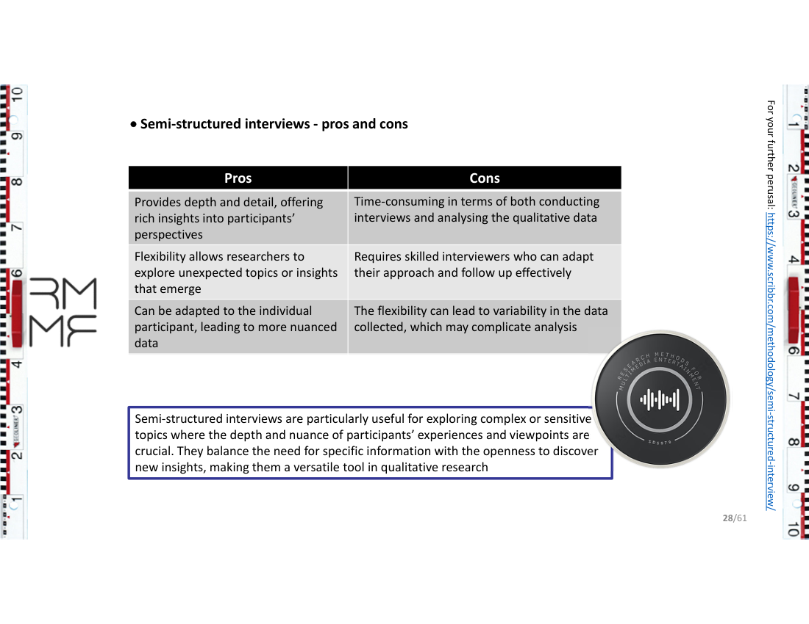
延伸阅读（For your further perusal）：https://www.scribbr.com/methodology/semi-structured-interview/
半结构式访谈（Semi-structured interviews）——优缺点
| 优点（Pros） | 缺点（Cons） |
|---|---|
| 提供深度与细节，为了解参与者（participants）的观点提供丰富洞见 | 无论在开展访谈（interviews）还是分析质性数据（qualitative data）方面都十分耗时 |
| 灵活性允许研究者探索涌现的意外主题或洞见 | 需要具备熟练技巧的访谈员（interviewers），能够灵活调整方法并有效追问 |
| 可根据个别参与者（participant）进行调整，从而获得更细致入微的数据 | 这种灵活性可能导致所收集数据的变异性（variability）增大，从而使分析变得复杂 |
半结构式访谈（Semi-structured interviews）在探索复杂或敏感主题时尤其有用，在这类主题中，参与者（participants）经验与观点的深度和细微差别至关重要。它在对特定信息的需求与发现新洞见的开放性之间取得平衡，使其成为质性研究（qualitative research）中一种多用途的工具。
英文检索原文（公式与版式请看左侧原图）
For your further perusal: https://www.scribbr.com/methodology/semi-structured-interview/ Semi-structured interviews - pros and cons Pros Cons Provides depth and detail, offering rich insights into participants’ perspectives Time-consuming in terms of both conducting interviews and analysing the qualitative data Flexibility allows researchers to explore unexpected topics or insights that emerge Requires skilled interviewers who can adapt their approach and follow up effectively Can be adapted to the individual participant, leading to more nuanced data The flexibility can lead to variability in the data collected, which may complicate analysis Semi-structured interviews are particularly useful for exploring complex or sensitive topics where the depth and nuance of participants’ experiences and viewpoints are crucial. They balance the need for specific information with the openness to discover new insights, making them a versatile tool in qualitative research 28/61

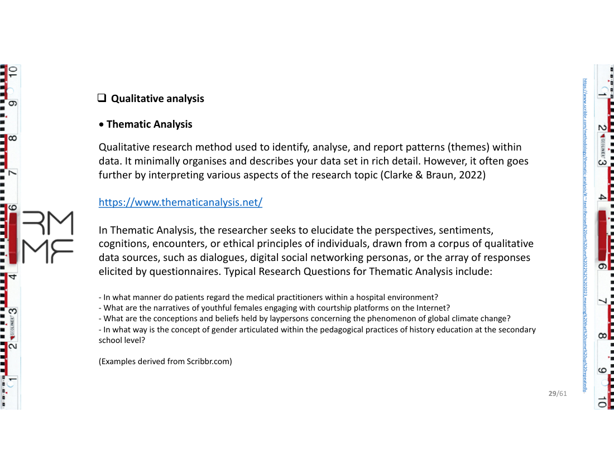
参考链接：https://www.scribbr.com/methodology/thematic-analysis/#:~:text=Revised%20on%20June%2022%2C%202023,meaning%20that%20come%20up%20repeatedly.
主题分析（Thematic Analysis）
一种质性研究（Qualitative research）方法，用于识别、分析和报告数据中的模式（主题（themes））。它在最基本层面上以丰富的细节组织并描述你的数据集（data set）。然而，它往往会更进一步，对研究主题的各个方面进行解释（Clarke & Braun, 2022）。
相关网站：https://www.thematicanalysis.net/
在主题分析（Thematic Analysis）中，研究者力图从一系列质性数据（qualitative data）来源的语料库（corpus）（例如对话、数字社交网络形象，或由问卷（questionnaires）所引出的一系列回答）中，阐明个体的观点、情感、认知、经历或伦理原则。适用于主题分析（Thematic Analysis）的典型研究问题（Research Questions）包括：
- 患者如何看待医院环境中的医务人员？
- 使用网络交友平台的年轻女性有着怎样的叙事（narratives）？
- 普通民众对全球气候变化现象持有怎样的概念理解与信念？
- 在中学历史教育的教学实践中，性别概念是如何被表达的？
（示例来源：Scribbr.com）
- 质性分析（Qualitative analysis）
英文检索原文（公式与版式请看左侧原图）
https://www.scribbr.com/methodology/thematic-analysis/#:~:text=Revised%20on%20June%2022%2C%202023,meaning%20that%20come%20up%20repeatedly. Thematic Analysis Qualitative research method used to identify, analyse, and report patterns (themes) within data. It minimally organises and describes your data set in rich detail. However, it often goes further by interpreting various aspects of the research topic (Clarke & Braun, 2022) https://www.thematicanalysis.net/ In Thematic Analysis, the researcher seeks to elucidate the perspectives, sentiments, cognitions, encounters, or ethical principles of individuals, drawn from a corpus of qualitative data sources, such as dialogues, digital social networking personas, or the array of responses elicited by questionnaires. Typical Research Questions for Thematic Analysis include: - In what manner do patients regard the medical practitioners within a hospital environment? - What are the narratives of youthful females engaging with courtship platforms on the Internet? - What are the conceptions and beliefs held by laypersons concerning the phenomenon of global climate change? - In what way is the concept of gender articulated within the pedagogical practices of history education at the secondary school level? (Examples derived from Scribbr.com) Qualitative analysis 29/61

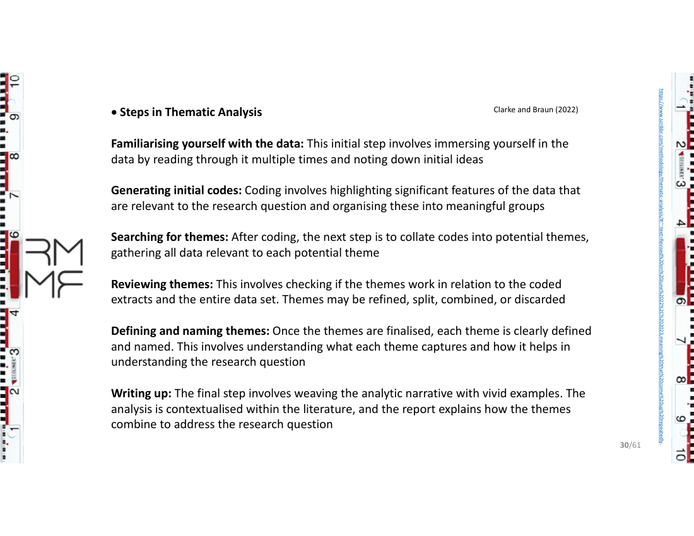
主题分析（Thematic Analysis）的步骤
- 熟悉数据（Familiarising yourself with the data）：这一初始步骤包括反复阅读数据并记录下初步想法，使自己沉浸于数据之中。
- 生成初始编码（codes）（Generating initial codes）：编码（Coding）包括标出数据中与研究问题（research question）相关的显著特征，并将其整理为有意义的组别。
- 搜寻主题（themes）（Searching for themes）：在编码（coding）之后，下一步是将编码（codes）归并整理成潜在主题（themes），汇集与每个潜在主题（theme）相关的所有数据。
- 审视主题（themes）（Reviewing themes）：这一步包括检查主题（themes）是否与已编码摘录（coded extracts）以及整个数据集（data set）相契合。主题（Themes）可能会被进一步精炼、拆分、合并或舍弃。
- 界定并命名主题（themes）（Defining and naming themes）：一旦主题（themes）最终确定，每个主题（theme）都要被清晰地界定与命名。这包括理解每个主题（theme）所捕捉的核心内容，以及它如何帮助理解研究问题（research question）。
- 撰写报告（Writing up）：最后一步是将分析性的叙述与生动的示例编织在一起。分析需置于既有文献（literature）的语境中，并且报告需阐明这些主题（themes）如何共同回应研究问题（research question）。
参考链接：https://www.scribbr.com/methodology/thematic-analysis/#:~:text=Revised%20on%20June%2022%2C%202023,meaning%20that%20come%20up%20repeatedly.
Clarke and Braun (2022)
英文检索原文（公式与版式请看左侧原图）
Steps in Thematic Analysis Familiarising yourself with the data: This initial step involves immersing yourself in the data by reading through it multiple times and noting down initial ideas Generating initial codes: Coding involves highlighting significant features of the data that are relevant to the research question and organising these into meaningful groups Searching for themes: After coding, the next step is to collate codes into potential themes, gathering all data relevant to each potential theme Reviewing themes: This involves checking if the themes work in relation to the coded extracts and the entire data set. Themes may be refined, split, combined, or discarded Defining and naming themes: Once the themes are finalised, each theme is clearly defined and named. This involves understanding what each theme captures and how it helps in understanding the research question Writing up: The final step involves weaving the analytic narrative with vivid examples. The analysis is contextualised within the literature, and the report explains how the themes combine to address the research question https://www.scribbr.com/methodology/thematic-analysis/#:~:text=Revised%20on%20June%2022%2C%202023,meaning%20that%20come%20up%20repeatedly. Clarke and Braun (2022) 30/61

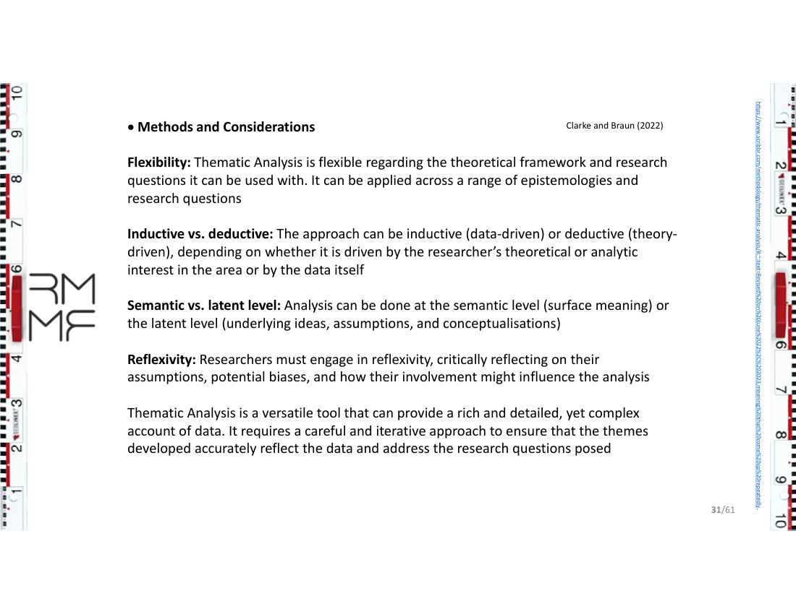
方法与考量（Methods and Considerations）
- 灵活性（Flexibility）：主题分析（Thematic Analysis）在可搭配使用的理论框架（theoretical framework）与研究问题（research questions）方面具有灵活性。它可以跨多种认识论（epistemologies）和研究问题（research questions）加以应用。
- 归纳法（Inductive） vs. 演绎法（deductive）：该方法可以是归纳法（inductive）（数据驱动（data-driven））的，也可以是演绎法（deductive）（理论驱动（theory-driven））的，这取决于它是由研究者在该领域的理论或分析兴趣所驱动，还是由数据本身所驱动。
- 语义层面（Semantic level） vs. 潜在层面（latent level）：分析可以在语义层面（semantic level）（表层意义）或潜在层面（latent level）（深层观念、预设（assumptions）与概念化（conceptualisations））上进行。
- 反思性（Reflexivity）：研究者必须践行反思性（reflexivity），批判性地反思自身的预设（assumptions）、潜在偏差（biases），以及自身的介入会如何影响分析。
主题分析（Thematic Analysis）是一种多用途的工具，能够对数据提供丰富、细致而又复杂的阐释。它需要严谨且迭代的方法（iterative approach），以确保所提炼的主题（themes）能够准确反映数据，并回应所提出的研究问题（research questions）。
参考链接：https://www.scribbr.com/methodology/thematic-analysis/#:~:text=Revised%20on%20June%2022%2C%202023,meaning%20that%20come%20up%20repeatedly.
Clarke and Braun (2022)
英文检索原文（公式与版式请看左侧原图）
Methods and Considerations Flexibility: Thematic Analysis is flexible regarding the theoretical framework and research questions it can be used with. It can be applied across a range of epistemologies and research questions Inductive vs. deductive: The approach can be inductive (data-driven) or deductive (theory- driven), depending on whether it is driven by the researcher’s theoretical or analytic interest in the area or by the data itself Semantic vs. latent level: Analysis can be done at the semantic level (surface meaning) or the latent level (underlying ideas, assumptions, and conceptualisations) Reflexivity: Researchers must engage in reflexivity, critically reflecting on their assumptions, potential biases, and how their involvement might influence the analysis Thematic Analysis is a versatile tool that can provide a rich and detailed, yet complex account of data. It requires a careful and iterative approach to ensure that the themes developed accurately reflect the data and address the research questions posed https://www.scribbr.com/methodology/thematic-analysis/#:~:text=Revised%20on%20June%2022%2C%202023,meaning%20that%20come%20up%20repeatedly. Clarke and Braun (2022) 31/61

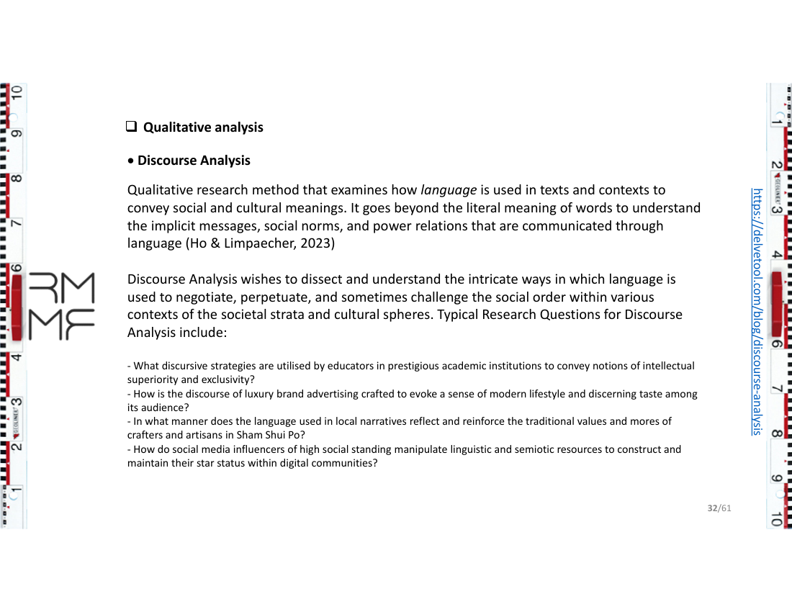
参考链接：https://delvetool.com/blog/discourse-analysis
话语分析（Discourse Analysis）
一种质性研究（Qualitative research）方法，考察语言如何在文本与语境中被使用以传达社会和文化意义。它超越词语的字面意义，旨在理解通过语言所传达的隐含信息、社会规范与权力关系（Ho & Limpaecher, 2023）。
话语分析（Discourse Analysis）力图剖析并理解语言在社会阶层和文化领域的各种语境中，被用来协商、维系并有时挑战社会秩序的错综复杂方式。适用于话语分析（Discourse Analysis）的典型研究问题（Research Questions）包括：
- 知名学术机构的教育者运用了哪些话语策略（discursive strategies）来传递知识优越感与排他性观念？
- 奢侈品牌广告的话语（discourse）是如何被精心建构，以在受众心中唤起现代生活方式与独到品味的？
- 本地叙事（narratives）中所使用的语言如何反映并强化深水埗（Sham Shui Po）手工艺人与匠人的传统价值观与风俗规范？
- 具有较高社会地位的社交媒体意见领袖如何操纵语言与符号学资源（semiotic resources），以在数字社群中建构并维持其明星地位？
- 质性分析（Qualitative analysis）
英文检索原文（公式与版式请看左侧原图）
https://delvetool.com/blog/discourse-analysis Discourse Analysis Qualitative research method that examines how language is used in texts and contexts to convey social and cultural meanings. It goes beyond the literal meaning of words to understand the implicit messages, social norms, and power relations that are communicated through language (Ho & Limpaecher, 2023) Discourse Analysis wishes to dissect and understand the intricate ways in which language is used to negotiate, perpetuate, and sometimes challenge the social order within various contexts of the societal strata and cultural spheres. Typical Research Questions for Discourse Analysis include: - What discursive strategies are utilised by educators in prestigious academic institutions to convey notions of intellectual superiority and exclusivity? - How is the discourse of luxury brand advertising crafted to evoke a sense of modern lifestyle and discerning taste among its audience? - In what manner does the language used in local narratives reflect and reinforce the traditional values and mores of crafters and artisans in Sham Shui Po? - How do social media influencers of high social standing manipulate linguistic and semiotic resources to construct and maintain their star status within digital communities? Qualitative analysis 32/61

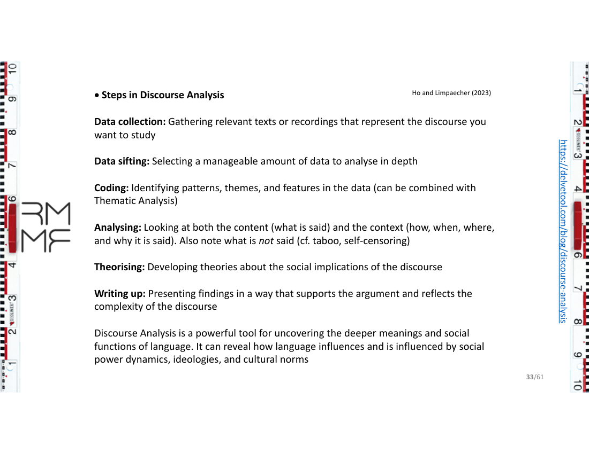
话语分析（Discourse Analysis）的步骤
- 数据收集（Data collection）：收集能够代表你想研究的话语（discourse）的相关文本或录音资料
- 数据筛选（Data sifting）：挑选数量可控的数据进行深入分析
- 编码（Coding）：识别数据中的模式、主题（themes）与特征（可与主题分析（Thematic Analysis）结合使用）
- 分析（Analysing）：同时考察内容（说了什么）与语境（context）（如何说、何时说、何地说以及为何这么说）。同时留意未被说出的内容（参见禁忌、自我审查）
- 理论建构（Theorising）：围绕该话语的社会意义构建理论
- 撰写报告（Writing up）：以支持论证（argument）并反映该话语复杂性的方式呈现研究发现（findings）
话语分析（Discourse Analysis）是一种强大的工具，可用于揭示语言的深层含义与社会功能。它能够展示语言如何影响社会权力动态、意识形态与文化规范，以及如何反过来受其影响
https://delvetool.com/blog/discourse-analysis
Ho and Limpaecher (2023)
英文检索原文（公式与版式请看左侧原图）
Steps in Discourse Analysis Data collection: Gathering relevant texts or recordings that represent the discourse you want to study Data sifting: Selecting a manageable amount of data to analyse in depth Coding: Identifying patterns, themes, and features in the data (can be combined with Thematic Analysis) Analysing: Looking at both the content (what is said) and the context (how, when, where, and why it is said). Also note what is not said (cf. taboo, self-censoring) Theorising: Developing theories about the social implications of the discourse Writing up: Presenting findings in a way that supports the argument and reflects the complexity of the discourse Discourse Analysis is a powerful tool for uncovering the deeper meanings and social functions of language. It can reveal how language influences and is influenced by social power dynamics, ideologies, and cultural norms https://delvetool.com/blog/discourse-analysis Ho and Limpaecher (2023) 33/61

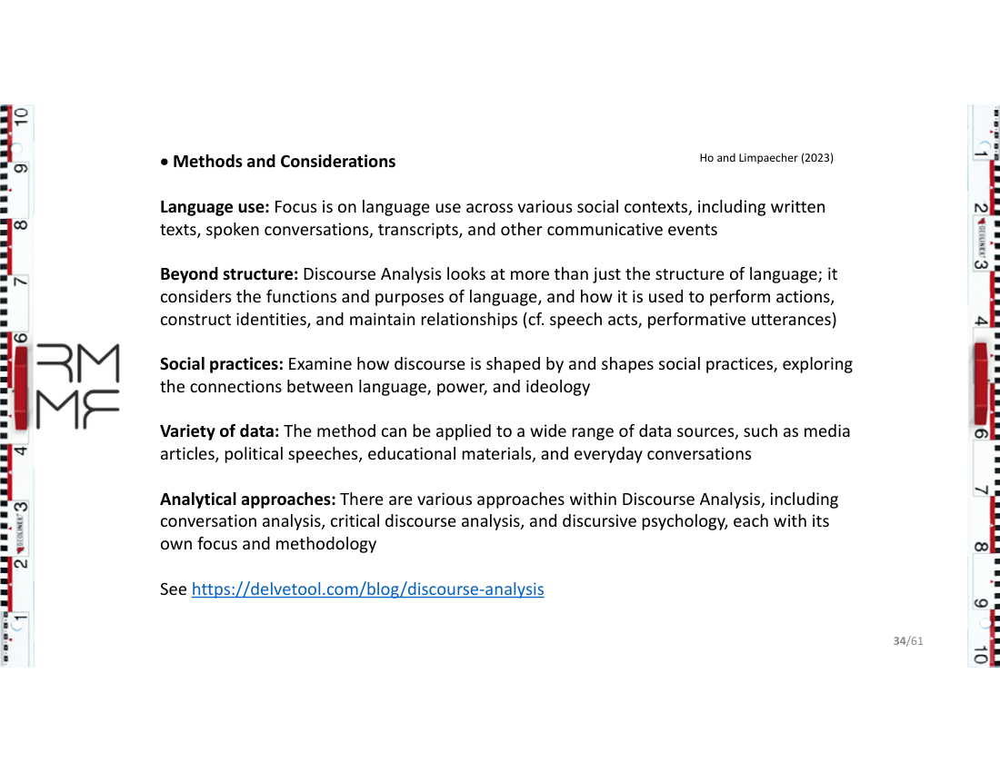
方法与考量（Methods and Considerations）
- 语言使用（Language use）：重点关注各种社会语境（social contexts）中的语言使用，包括书面文本、口头对话、转录文本（transcripts）以及其他交际事件
- 超越结构（Beyond structure）：话语分析（Discourse Analysis）关注的不仅仅是语言结构；它还考察语言的功能与目的，以及语言如何被用来实施行动、建构身份与维持关系（参见言语行为（speech acts）、施为话语（performative utterances））
- 社会实践（Social practices）：检视话语（discourse）如何受社会实践塑造并反过来塑造社会实践，探索语言、权力与意识形态之间的联系
- 数据的多样性（Variety of data）：该方法可应用于广泛的数据源（data sources），例如媒体文章、政治演讲、教育材料以及日常对话
- 分析进路（Analytical approaches）：话语分析（Discourse Analysis）内部有多种进路，包括会话分析（conversation analysis）、批判话语分析（critical discourse analysis）以及话语心理学（discursive psychology），各自都有其关注重点与方法论（methodology）
参见 https://delvetool.com/blog/discourse-analysis
Ho and Limpaecher (2023)
英文检索原文（公式与版式请看左侧原图）
Methods and Considerations Language use: Focus is on language use across various social contexts, including written texts, spoken conversations, transcripts, and other communicative events Beyond structure: Discourse Analysis looks at more than just the structure of language; it considers the functions and purposes of language, and how it is used to perform actions, construct identities, and maintain relationships (cf. speech acts, performative utterances) Social practices: Examine how discourse is shaped by and shapes social practices, exploring the connections between language, power, and ideology Variety of data: The method can be applied to a wide range of data sources, such as media articles, political speeches, educational materials, and everyday conversations Analytical approaches: There are various approaches within Discourse Analysis, including conversation analysis, critical discourse analysis, and discursive psychology, each with its own focus and methodology See https://delvetool.com/blog/discourse-analysis Ho and Limpaecher (2023) 34/61

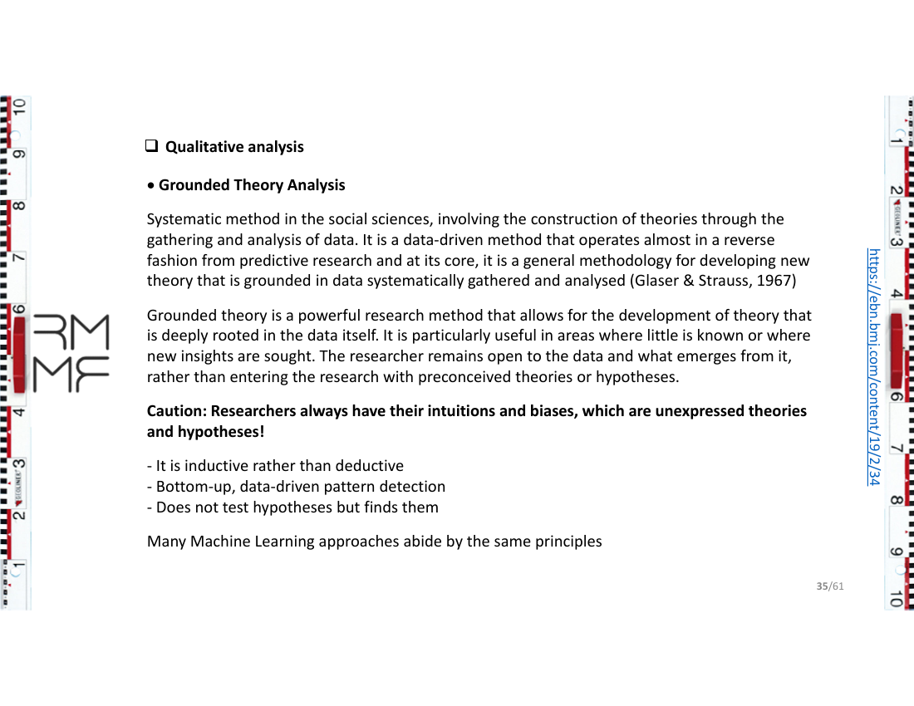
https://ebn.bmj.com/content/19/2/34
扎根理论分析（Grounded Theory Analysis）
社会科学中的一种系统性方法，涉及通过收集与分析数据来建构理论。它是一种数据驱动（data-driven）的方法，其运作方式几乎与预测性研究（predictive research）相反；从核心上讲，它是一种通用方法论（methodology），用于基于系统收集和分析的数据来发展新理论（Glaser & Strauss, 1967）
扎根理论（Grounded theory）是一种强大的研究方法（research method），能够发展出深深植根于数据本身的理论。它在人们知之甚少或寻求新见解的领域尤为有用。研究者对数据以及从中涌现出的内容保持开放态度，而不是带着先入为主的理论或假设（hypotheses）进入研究。
注意（Caution）：研究者总是带有自己的直觉与偏见（biases），这些其实就是未明说的理论和假设（hypotheses）！
- 它是归纳的（inductive），而非演绎的（deductive）
- 自下而上（Bottom-up）、数据驱动（data-driven）的模式检测（pattern detection）
- 不检验假设（hypotheses），而是发现假设（hypotheses）
许多机器学习（Machine Learning）方法都遵循相同的原则
- 质性分析（Qualitative analysis）
英文检索原文（公式与版式请看左侧原图）
https://ebn.bmj.com/content/19/2/34 Grounded Theory Analysis Systematic method in the social sciences, involving the construction of theories through the gathering and analysis of data. It is a data-driven method that operates almost in a reverse fashion from predictive research and at its core, it is a general methodology for developing new theory that is grounded in data systematically gathered and analysed (Glaser & Strauss, 1967) Grounded theory is a powerful research method that allows for the development of theory that is deeply rooted in the data itself. It is particularly useful in areas where little is known or where new insights are sought. The researcher remains open to the data and what emerges from it, rather than entering the research with preconceived theories or hypotheses. Caution: Researchers always have their intuitions and biases, which are unexpressed theories and hypotheses! - It is inductive rather than deductive - Bottom-up, data-driven pattern detection - Does not test hypotheses but finds them Many Machine Learning approaches abide by the same principles Qualitative analysis 35/61

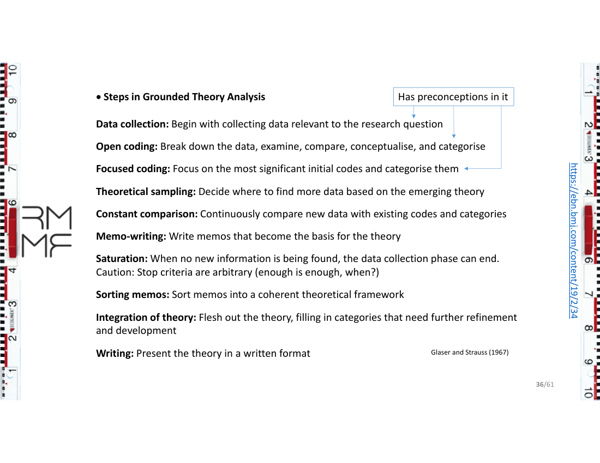
扎根理论分析（Grounded Theory Analysis）的步骤
- 数据收集（Data collection）：从收集与研究问题（research question）相关的数据开始
- 开放式编码（Open coding）：拆解数据，对其进行审视、比较、概念化（conceptualise）与归类（categorise）
- 聚焦编码（Focused coding）：聚焦于最重要的初始编码（initial codes）并将它们归类
- 理论抽样（Theoretical sampling）：根据正在涌现的理论来决定去哪里寻找更多数据
- 持续比较（Constant comparison）：持续将新数据与现有的编码（codes）和类别（categories）进行比较
- 备忘录撰写（Memo-writing）：撰写成为理论基础的备忘录（memos）
- 饱和（Saturation）：当不再发现新信息时，数据收集（data collection）阶段即可结束。
注意（Caution）：停止准则（Stop criteria）具有任意性（什么时候才算「够了」呢？）
- 整理备忘录（Sorting memos）：将备忘录（memos）整理成一个连贯的理论框架（theoretical framework）
- 理论整合（Integration of theory）：充实该理论，填补需要进一步完善和发展的类别（categories）
- 撰写（Writing）：以书面形式呈现该理论
https://ebn.bmj.com/content/19/2/34
其中包含预设观念（Has preconceptions in it）
Glaser and Strauss (1967)
英文检索原文（公式与版式请看左侧原图）
Steps in Grounded Theory Analysis Data collection: Begin with collecting data relevant to the research question Open coding: Break down the data, examine, compare, conceptualise, and categorise Focused coding: Focus on the most significant initial codes and categorise them Theoretical sampling: Decide where to find more data based on the emerging theory Constant comparison: Continuously compare new data with existing codes and categories Memo-writing: Write memos that become the basis for the theory Saturation: When no new information is being found, the data collection phase can end. Caution: Stop criteria are arbitrary (enough is enough, when?) Sorting memos: Sort memos into a coherent theoretical framework Integration of theory: Flesh out the theory, filling in categories that need further refinement and development Writing: Present the theory in a written format https://ebn.bmj.com/content/19/2/34 Has preconceptions in it Glaser and Strauss (1967) 36/61

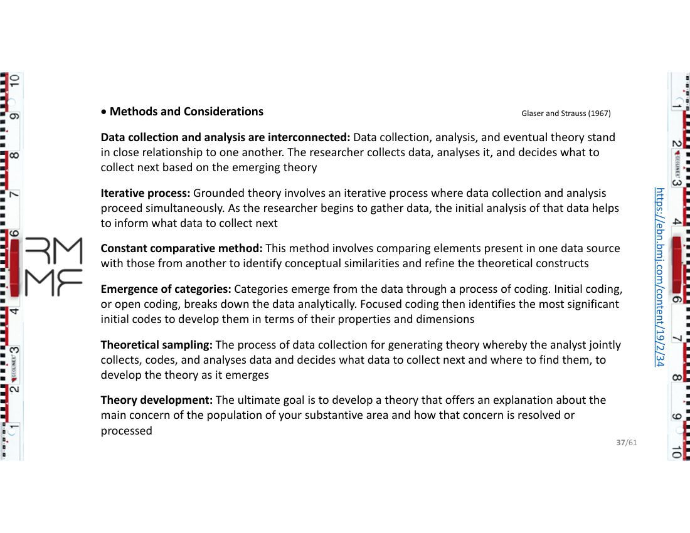
方法与考量（Methods and Considerations）
- 数据收集（Data collection）与分析相互关联（Data collection and analysis are interconnected）：数据收集（Data collection）、分析以及最终形成的理论彼此紧密相连。研究者收集数据、进行分析，并根据正在涌现的理论决定下一步收集什么
- 迭代过程（Iterative process）：扎根理论（Grounded theory）涉及一个迭代过程（iterative process），其中数据收集（data collection）与分析同时进行。当研究者开始收集数据时，对该数据的初步分析有助于指导接下来要收集什么数据
- 持续比较法（Constant comparative method）：该方法涉及将一个数据源（data source）中存在的元素与另一个数据源中的元素进行比较，以识别概念上的相似性并完善理论构念（theoretical constructs）
- 类别（Categories）的涌现（Emergence of categories）：类别（Categories）通过编码（coding）过程从数据中涌现出来。初始编码（Initial coding），即开放式编码（open coding），在分析层面上拆解数据。随后，聚焦编码（focused coding）识别出最重要的初始编码（initial codes），从其属性（properties）与维度（dimensions）方面加以发展
- 理论抽样（Theoretical sampling）：用于生成理论的数据收集（data collection）过程，在此过程中分析者同步进行数据收集、编码（codes）与分析，并决定下一步收集什么数据以及去哪里找到它们，从而在理论涌现的过程中不断发展该理论
- 理论发展（Theory development）：最终目标是发展出一种理论，对你所在实质研究领域中总体（population）的核心关切以及该关切是如何得到解决或处理的做出解释
https://ebn.bmj.com/content/19/2/34
Glaser and Strauss (1967)
英文检索原文（公式与版式请看左侧原图）
Methods and Considerations Data collection and analysis are interconnected: Data collection, analysis, and eventual theory stand in close relationship to one another. The researcher collects data, analyses it, and decides what to collect next based on the emerging theory Iterative process: Grounded theory involves an iterative process where data collection and analysis proceed simultaneously. As the researcher begins to gather data, the initial analysis of that data helps to inform what data to collect next Constant comparative method: This method involves comparing elements present in one data source with those from another to identify conceptual similarities and refine the theoretical constructs Emergence of categories: Categories emerge from the data through a process of coding. Initial coding, or open coding, breaks down the data analytically. Focused coding then identifies the most significant initial codes to develop them in terms of their properties and dimensions Theoretical sampling: The process of data collection for generating theory whereby the analyst jointly collects, codes, and analyses data and decides what data to collect next and where to find them, to develop the theory as it emerges Theory development: The ultimate goal is to develop a theory that offers an explanation about the main concern of the population of your substantive area and how that concern is resolved or processed https://ebn.bmj.com/content/19/2/34 Glaser and Strauss (1967) 37/61

课间休息（Break）
英文检索原文（公式与版式请看左侧原图）
Break

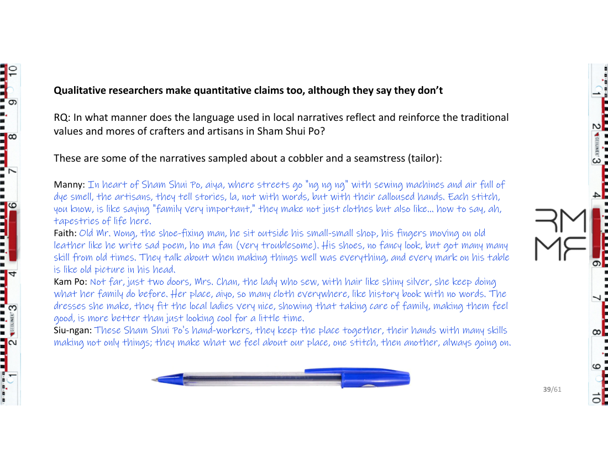
质性研究者（Qualitative researchers）也会提出量化主张（quantitative claims），尽管他们口头上说自己不会
研究问题（RQ）：本地叙事（narratives）中使用的语言，以何种方式反映并强化了深水埗（Sham Shui Po）手艺人与工匠的传统价值观与习俗（values and mores）？
以下是围绕一位补鞋匠和一位女裁缝（裁缝）抽样（sampled）收集的部分叙事（narratives）：
- Manny：在深水埗的中心地带，哎呀，街道上缝纫机发出「嗡嗡嗡（ng ng ng）」的响声，空气中弥漫着染料的味道，这些工匠讲故事啦，不是用言语，而是用他们长满老茧的双手。你知道的，每一针每一线都像是在说「家庭非常重要」，他们做的不只是衣服，而且还像是……怎么说呢，啊，这里生活的织锦。
- Faith：老王先生（Old Mr. Wong），那个修鞋的师傅，他坐在他小小的铺子外面，他的手指在旧皮革上移动，就像在写一首悲伤的诗，好麻烦（ho ma fan，非常费事）。他的鞋子外表并不花哨，但却凝聚了许多旧时代的精湛手艺。它们诉说着过去那个把东西做好就是一切的年代，他工作台上的每一道痕迹都像是他脑海里的一幅旧画卷。
- Kam Po：没多远，就隔两扇门，陈太太（Mrs. Chan），那位做缝纫的女士，满头闪亮的银发，她一直做着她家里过去所做的事。她那个地方，哎哟，到处都是布料，就像一本没有文字的历史书。她做的连衣裙非常合本地女士的身，这表明照顾家人、让他们感觉舒心，比只图一时看起来很酷好得多。
- Siu-ngan：这些深水埗的手艺人把这片地方维系在了一起，他们那双巧手制作的不只是物品；他们一针接着一针，永不止息，塑造着我们对自己这片地方的感受。
英文检索原文（公式与版式请看左侧原图）
Qualitative researchers make quantitative claims too, although they say they don’t RQ: In what manner does the language used in local narratives reflect and reinforce the traditional values and mores of crafters and artisans in Sham Shui Po? These are some of the narratives sampled about a cobbler and a seamstress (tailor): Manny: In heart of Sham Shui Po, aiya, where streets go "ng ng ng" with sewing machines and air full of dye smell, the artisans, they tell stories, la, not with words, but with their calloused hands. Each stitch, you know, is like saying "family very important," they make not just clothes but also like... how to say, ah, tapestries of life here. Faith: Old Mr. Wong, the shoe-fixing man, he sit outside his small-small shop, his fingers moving on old leather like he write sad poem, ho ma fan (very troublesome). His shoes, no fancy look, but got many many skill from old times. They talk about when making things well was everything, and every mark on his table is like old picture in his head. Kam Po: Not far, just two doors, Mrs. Chan, the lady who sew, with hair like shiny silver, she keep doing what her family do before. Her place, aiyo, so many cloth everywhere, like history book with no words. The dresses she make, they fit the local ladies very nice, showing that taking care of family, making them feel good, is more better than just looking cool for a little time. Siu-ngan: These Sham Shui Po's hand-workers, they keep the place together, their hands with many skills making not only things; they make what we feel about our place, one stitch, then another, always going on. 39/61

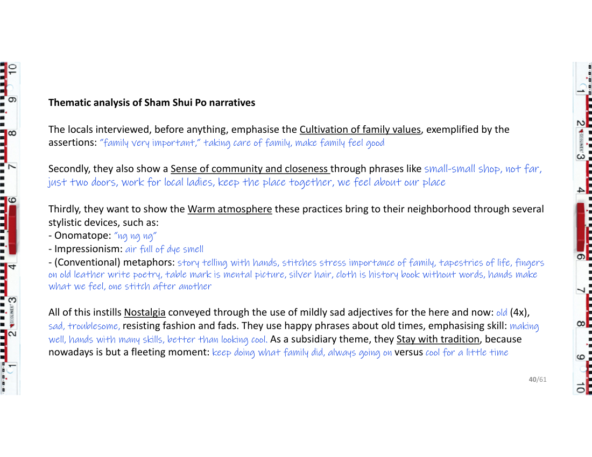
深水埗（Sham Shui Po）叙事（narratives）的主题分析（Thematic analysis）
受访（interviewed）的本地人首先强调的是「家庭价值观的培育（Cultivation of family values）」，这一点通过以下断言得以体现：「家庭非常重要（family very important）」、「照顾家人（taking care of family）」、「让家人感觉舒心（make family feel good）」。
其次，他们还通过诸如「小小的铺子（small-small shop）」、「没多远（not far）」、「就隔两扇门（just two doors）」、「为本地女士做工（work for local ladies）」、「把这片地方维系在一起（keep the place together）」、「我们对自己这片地方的感受（we feel about our place）」等短语，展现出「社区感与亲近感（Sense of community and closeness）」。
第三，他们希望通过多种修辞手法（stylistic devices）来展现这些实践为其邻里街坊带来的「温暖氛围（Warm atmosphere）」，例如：
- 拟声词（Onomatope）：「嗡嗡嗡（ng ng ng）」
- 印象派描写法（Impressionism）：空气中弥漫着染料的味道（air full of dye smell）
- （常规）隐喻（(Conventional) metaphors）：用双手讲故事（story telling with hands）、针脚强调家庭的重要性（stitches stress importance of family）、生活的织锦（tapestries of life）、手指在旧皮革上写诗（fingers on old leather write poetry）、工作台上的痕迹是脑海中的画卷（table mark is mental picture）、银发（silver hair）、布料是没有文字的历史书（cloth is history book without words）、双手塑造我们的感受（hands make what we feel）、一针接着一针（one stitch after another）
所有这些都灌注了一种「怀旧情怀（Nostalgia）」，它通过对当下使用略带忧伤的形容词来传达：旧／老（old，出现 4 次）、悲伤的（sad）、麻烦的（troublesome），并抵制时尚与一时风潮（resisting fashion and fads）。他们使用愉快的短语来谈论旧时光，强调手艺：把东西做好（making well）、拥有许多技能的双手（hands with many skills）、比看起来很酷更好（better than looking cool）。作为一个次级主题（subsidiary theme），他们「坚守传统（Stay with tradition）」，因为当下不过是转瞬即逝的片刻：继续做家里以前做的事（keep doing what family did）、永不止息（always going on），以此对照「只酷一小会儿（cool for a little time）」。
英文检索原文（公式与版式请看左侧原图）
Thematic analysis of Sham Shui Po narratives The locals interviewed, before anything, emphasise the Cultivation of family values, exemplified by the assertions: “family very important,” taking care of family, make family feel good Secondly, they also show a Sense of community and closeness through phrases like small-small shop, not far, just two doors, work for local ladies, keep the place together, we feel about our place Thirdly, they want to show the Warm atmosphere these practices bring to their neighborhood through several stylistic devices, such as: - Onomatope: “ng ng ng” - Impressionism: air full of dye smell - (Conventional) metaphors: story telling with hands, stitches stress importance of family, tapestries of life, fingers on old leather write poetry, table mark is mental picture, silver hair, cloth is history book without words, hands make what we feel, one stitch after another All of this instills Nostalgia conveyed through the use of mildly sad adjectives for the here and now: old (4x), sad, troublesome, resisting fashion and fads. They use happy phrases about old times, emphasising skill: making well, hands with many skills, better than looking cool. As a subsidiary theme, they Stay with tradition, because nowadays is but a fleeting moment: keep doing what family did, always going on versus cool for a little time 40/61

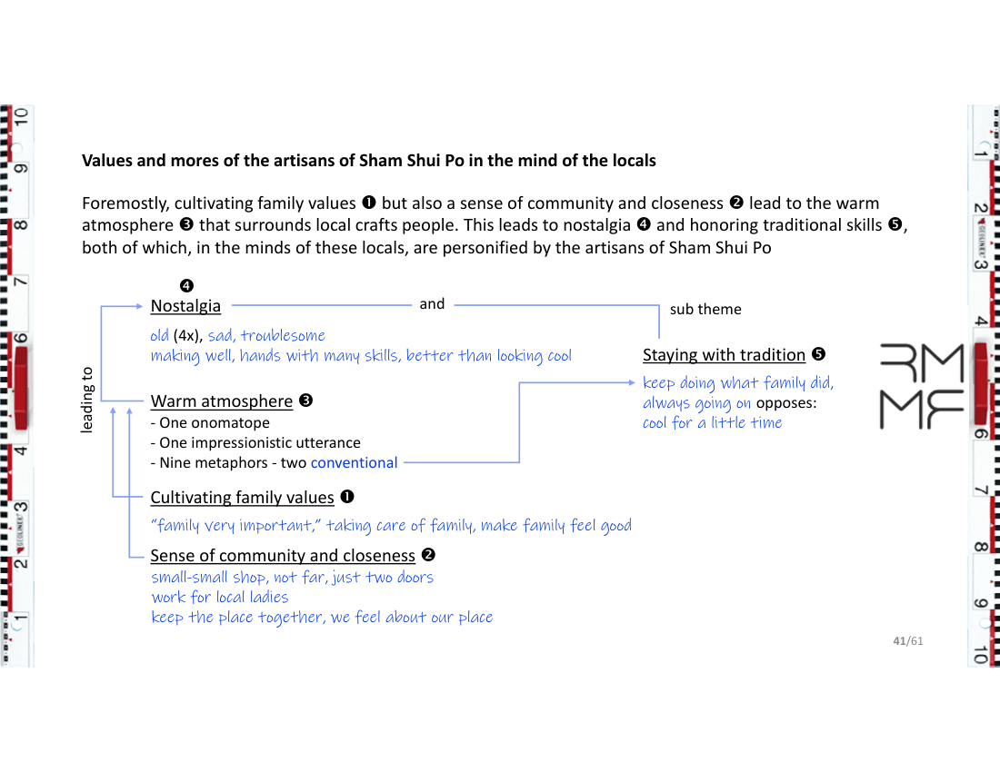
本地人心目中深水埗（Sham Shui Po）工匠的价值观与习俗（Values and mores）
概念关系图：
- 培育家庭价值观（Cultivating family values）：
- 「家庭非常重要（"family very important"）」、「照顾家人（taking care of family）」、「让家人感觉舒心（make family feel good）」
- 与（and）——社区感与亲近感（Sense of community and closeness）：
- 「小小的铺子（small-small shop）」、「没多远（not far）」、「就隔两扇门（just two doors）」
- 「为本地女士做工（work for local ladies）」
- 「把这片地方维系在一起（keep the place together）」、「我们对自己这片地方的感受（we feel about our place）」
- 引向（leading to）→ 温暖氛围（Warm atmosphere）：
- 1 个拟声词（onomatope）
- 1 句印象派话语（impressionistic utterance）
- 9 个隐喻（metaphors）——其中 2 个为常规隐喻（conventional）
- 引向（leading to）→ 怀旧情怀（Nostalgia）：
- 「旧／老（old，4 次）」、「悲伤的（sad）」、「麻烦的（troublesome）」
- 「把东西做好（making well）」、「拥有许多技能的双手（hands with many skills）」、「比看起来很酷更好（better than looking cool）」
- 次级主题（sub theme） → 坚守传统（Staying with tradition）：
- 「继续做家里以前做的事（keep doing what family did）」、「永不止息（always going on）」与「只酷一小会儿（cool for a little time）」相对立（opposes）
最重要地，培育家庭价值观以及社区感与亲近感，共同造就了围绕在本地手艺人身边的温暖氛围。这又引向了对传统的怀旧情怀与对传统手艺的尊崇，而这两者在本地人心目中，正是由深水埗（Sham Shui Po）的工匠们所具象化体现的。
英文检索原文（公式与版式请看左侧原图）
Values and mores of the artisans of Sham Shui Po in the mind of the locals Cultivating family values Warm atmosphere - One onomatope - One impressionistic utterance - Nine metaphors - two conventional Nostalgia Staying with tradition Sense of community and closeness old (4x), sad, troublesome making well, hands with many skills, better than looking cool keep doing what family did, always going on opposes: cool for a little time sub theme leading to and “family very important,” taking care of family, make family feel good small-small shop, not far, just two doors work for local ladies keep the place together, we feel about our place Foremostly, cultivating family values but also a sense of community and closeness lead to the warm atmosphere that surrounds local crafts people. This leads to nostalgia and honoring traditional skills , both of which, in the minds of these locals, are personified by the artisans of Sham Shui Po 41/61

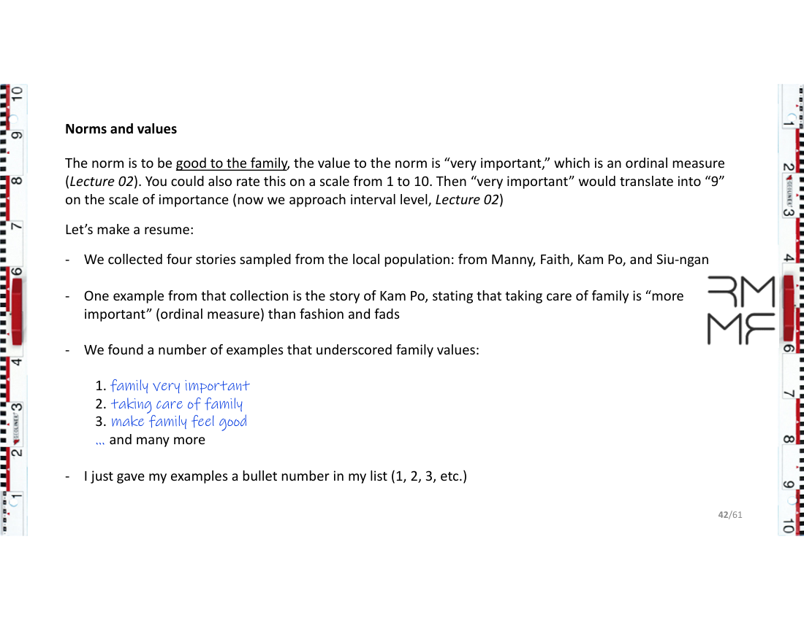
规范与价值（Norms and values）
这项规范（norm）是善待家人，而赋予该规范（norm）的价值（value）是「非常重要（very important）」，这是一种定序测量（ordinal measure）（第 02 讲）。你也可以在一个 1 到 10 的量表（scale）上对此进行评分。那么，「非常重要」在重要性量表（scale）上就会转化为「9」（此时我们就接近定距水平（interval level），第 02 讲）。
让我们来做个小结：
- 我们从本地总体（population）中抽样（sampled）收集了四个故事：分别来自 Manny、Faith、Kam Po 和 Siu-ngan
- 该故事集中的一个例子是 Kam Po 的故事，其中指出照顾家人比时尚与一时风潮「更重要」（定序测量（ordinal measure））
- 我们发现了许多凸显家庭价值观的例子：
- 家庭非常重要（family very important）
- 照顾家人（taking care of family）
- 让家人感觉舒心（make family feel good）
……以及更多其他例子
- 我刚刚在列表中给我的例子编上了项目编号（1、2、3 等）
英文检索原文（公式与版式请看左侧原图）
The norm is to be good to the family, the value to the norm is “very important,” which is an ordinal measure (Lecture 02). You could also rate this on a scale from 1 to 10. Then “very important” would translate into “9” on the scale of importance (now we approach interval level, Lecture 02) Let’s make a resume: - We collected four stories sampled from the local population: from Manny, Faith, Kam Po, and Siu-ngan - One example from that collection is the story of Kam Po, stating that taking care of family is “more important” (ordinal measure) than fashion and fads - We found a number of examples that underscored family values: 1. family very important 2. taking care of family 3. make family feel good … and many more - I just gave my examples a bullet number in my list (1, 2, 3, etc.) Norms and values 42/61

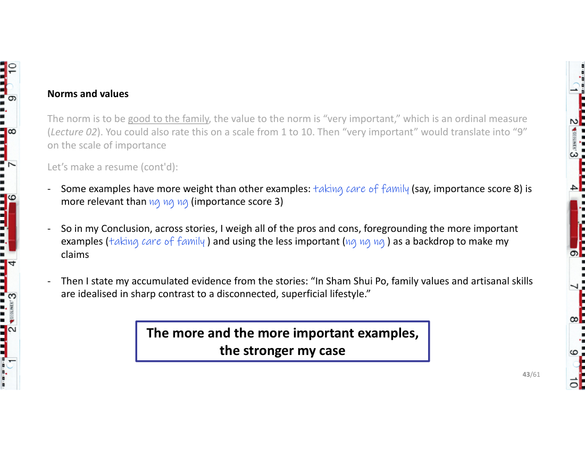
规范与价值（Norms and values）
这项规范（norm）是善待家人，而赋予该规范（norm）的价值（value）是「非常重要（very important）」，这是一种定序测量（ordinal measure）（第 02 讲）。你也可以在一个 1 到 10 的量表（scale）上对此进行评分。那么，「非常重要」在重要性量表（scale）上就会转化为「9」。
让我们继续做个小结（续）：
- 有些例子比其他例子具有更大的权重（weight）：照顾家人（比如，重要性得分为 8）比「嗡嗡嗡（ng ng ng）」（重要性得分为 3）更具相关性
- 因此，在我的结论中，综合各个故事，我权衡了所有的利弊正反（pros and cons），把更重要的例子（照顾家人）放在前景突显，而把较不重要的例子（ng ng ng）作为背景衬托，以此提出我的主张
- 接着，我陈述从这些故事中得到的累积证据（accumulated evidence）：「在深水埗（Sham Shui Po），家庭价值观与工匠技艺被理想化，与一种疏离、肤浅的生活方式形成了鲜明对比。」
例子越多、且越重要，我的论据就越有力（The more and the more important examples, the stronger my case）。
英文检索原文（公式与版式请看左侧原图）
The norm is to be good to the family, the value to the norm is “very important,” which is an ordinal measure (Lecture 02). You could also rate this on a scale from 1 to 10. Then “very important” would translate into “9” on the scale of importance Let’s make a resume (cont'd): - Some examples have more weight than other examples: taking care of family (say, importance score 8) is more relevant than ng ng ng (importance score 3) - So in my Conclusion, across stories, I weigh all of the pros and cons, foregrounding the more important examples (taking care of family ) and using the less important (ng ng ng ) as a backdrop to make my claims - Then I state my accumulated evidence from the stories: “In Sham Shui Po, family values and artisanal skills are idealised in sharp contrast to a disconnected, superficial lifestyle.” Norms and values The more and the more important examples, the stronger my case 43/61

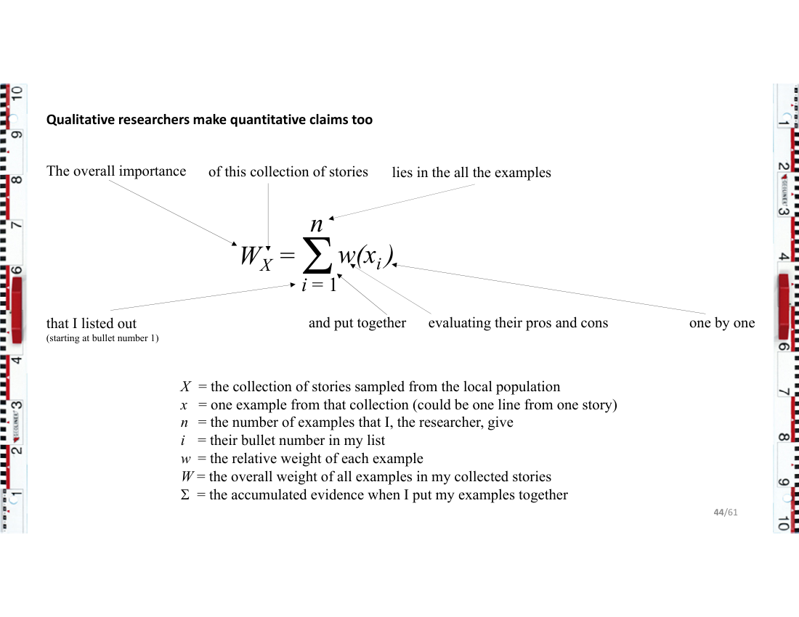
质性研究者（Qualitative researchers）也会提出量化主张（quantitative claims）
公式各部分含义说明：
- WX = 这一系列故事的整体重要性，在于我列出的所有例子（从项目编号 1 开始），评估它们的利弊正反，并一个个汇总在一起
- X = 从本地总体（population）中抽样（sampled）收集的故事集合
- x = 该集合中的一个例子（可以是某个故事中的一句话）
- n = 我作为研究者所给出的例子数量
- i = 它们在我列表中的项目编号
- w = 每个例子的相对权重（relative weight）
- W = 我所收集故事中所有例子的总权重（overall weight）
- Σ = 当我把各个例子汇总在一起时的累积证据（accumulated evidence）
英文检索原文（公式与版式请看左侧原图）
w(xi ) n i = 1 WX = The overall importance of this collection of stories lies in the all the examples that I listed out (starting at bullet number 1) evaluating their pros and cons and put together one by one X = the collection of stories sampled from the local population x = one example from that collection (could be one line from one story) n = the number of examples that I, the researcher, give i = their bullet number in my list w = the relative weight of each example W = the overall weight of all examples in my collected stories = the accumulated evidence when I put my examples together Qualitative researchers make quantitative claims too 44/61

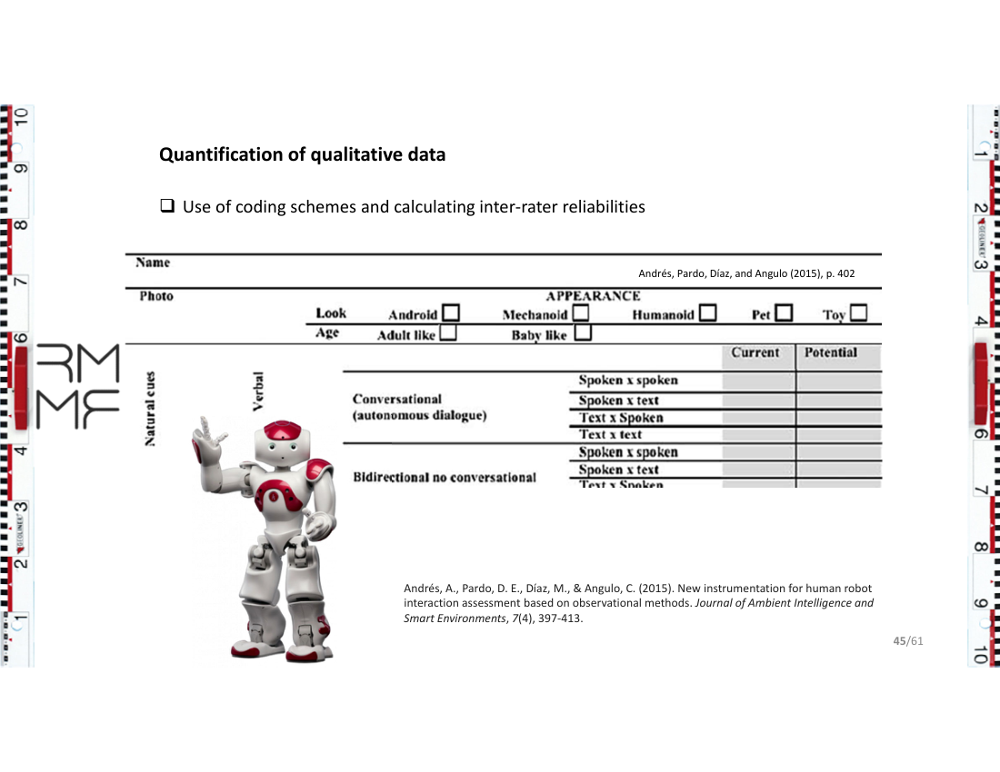
质性数据的量化（Quantification of qualitative data）
- 使用编码方案（coding schemes）并计算评分者间信度（inter-rater reliabilities）
图表来源：Andrés, Pardo, Díaz, and Angulo (2015), p. 402
参考文献：Andrés, A., Pardo, D. E., Díaz, M., & Angulo, C. (2015). New instrumentation for human robot interaction assessment based on observational methods. Journal of Ambient Intelligence and Smart Environments, 7(4), 397-413.
英文检索原文（公式与版式请看左侧原图）
Quantification of qualitative data Use of coding schemes and calculating inter-rater reliabilities Andrés, Pardo, Díaz, and Angulo (2015), p. 402 Andrés, A., Pardo, D. E., Díaz, M., & Angulo, C. (2015). New instrumentation for human robot interaction assessment based on observational methods. Journal of Ambient Intelligence and Smart Environments, 7(4), 397-413. 45/61

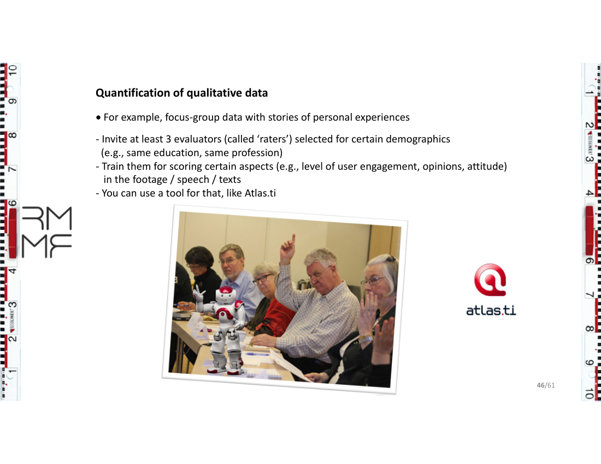
质性数据的量化（Quantification of qualitative data）
- 例如，包含个人经历故事的焦点小组（focus-group）数据
- 邀请至少 3 名根据特定人口统计学特征（demographics）（例如相同教育背景、相同职业）筛选出的评估者（称为「评分者（raters）」）
- 对其进行培训，以针对录像／语音／文本中的某些方面（例如用户参与度（user engagement）水平、观点、态度（attitude））进行评分（scoring）
- 你可以使用工具来完成这项工作，例如 Atlas.ti
英文检索原文（公式与版式请看左侧原图）
For example, focus-group data with stories of personal experiences - Invite at least 3 evaluators (called ‘raters’) selected for certain demographics (e.g., same education, same profession) - Train them for scoring certain aspects (e.g., level of user engagement, opinions, attitude) in the footage / speech / texts - You can use a tool for that, like Atlas.ti Quantification of qualitative data 46/61

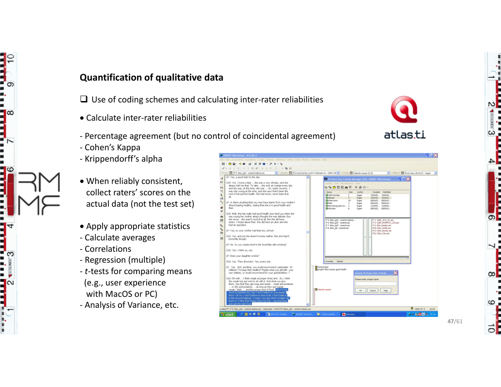
质性数据的量化（Quantification of qualitative data）
- 使用编码方案（coding schemes）并计算评分者间信度（inter-rater reliabilities）
- 计算评分者间信度（inter-rater reliabilities）
- 一致率百分比（Percentage agreement）（但未控制偶然一致（coincidental agreement））
- 科恩 kappa（Cohen’s Kappa）
- 克里彭多夫 alpha（Krippendorff’s alpha）
- 当达到可靠的一致性（consistent）时，收集评分者（raters）在实际数据（而非测试集（test set））上的评分
- 应用恰当的统计方法（statistics）
- 计算均值（averages）
- 相关（Correlations）
- 多元回归（Regression (multiple)）
- 用于比较均值（means）的 t 检验（t-tests）（例如使用 MacOS 或 PC 的用户体验（user experience））
- 方差分析（Analysis of Variance） 等
英文检索原文（公式与版式请看左侧原图）
Quantification of qualitative data Use of coding schemes and calculating inter-rater reliabilities Calculate inter-rater reliabilities - Percentage agreement (but no control of coincidental agreement) - Cohen’s Kappa - Krippendorff’s alpha When reliably consistent, collect raters’ scores on the actual data (not the test set) Apply appropriate statistics - Calculate averages - Correlations - Regression (multiple) - t-tests for comparing means (e.g., user experience with MacOS or PC) - Analysis of Variance, etc. 47/61

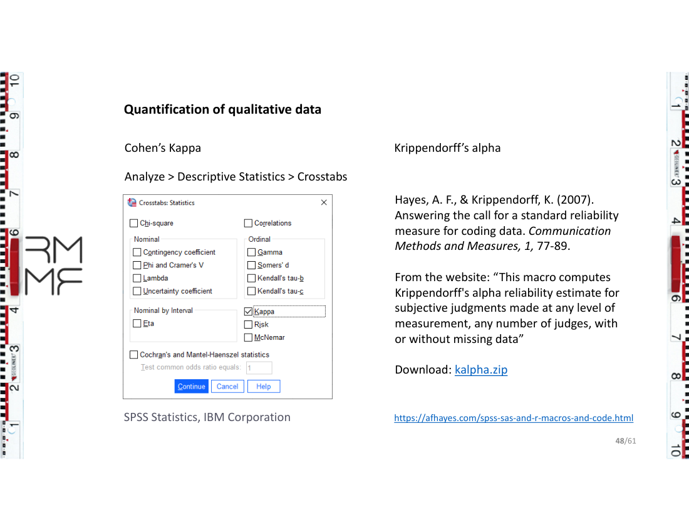
质性数据的量化（Quantification of qualitative data）
- 科恩 kappa（Cohen’s Kappa）
- SPSS Statistics，IBM Corporation
- Analyze（分析）> Descriptive Statistics（描述统计）> Crosstabs（交叉表）
- 克里彭多夫 alpha（Krippendorff’s alpha）
- https://afhayes.com/spss-sas-and-r-macros-and-code.html
- Hayes, A. F., & Krippendorff, K. (2007). Answering the call for a standard reliability measure for coding data. Communication Methods and Measures, 1, 77-89.
- 网站说明：「该宏（macro）可计算在任意测量水平（level of measurement）、任意数量评判者（judges）以及有或无缺失数据（missing data）的情况下，针对主观判断（subjective judgments）的克里彭多夫 alpha 信度估计（Krippendorff's alpha reliability estimate）」
- 下载：
kalpha.zip
英文检索原文（公式与版式请看左侧原图）
SPSS Statistics, IBM Corporation Analyze > Descriptive Statistics > Crosstabs https://afhayes.com/spss-sas-and-r-macros-and-code.html Quantification of qualitative data Hayes, A. F., & Krippendorff, K. (2007). Answering the call for a standard reliability measure for coding data. Communication Methods and Measures, 1, 77-89. From the website: “This macro computes Krippendorff's alpha reliability estimate for subjective judgments made at any level of measurement, any number of judges, with or without missing data” Download: kalpha.zip Cohen’s Kappa Krippendorff’s alpha 48/61

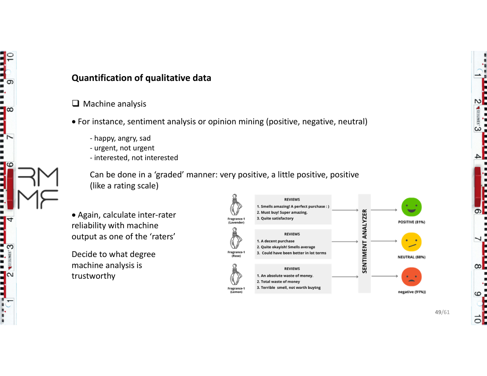
质性数据的量化（Quantification of qualitative data）
- 机器分析（Machine analysis）
- 例如，情感分析（sentiment analysis）或观点挖掘（opinion mining）（正面、负面、中性）
- 开心、愤怒、悲伤
- 紧急、不紧急
- 感兴趣、不感兴趣
- 可以采用「分级（graded）」方式进行：非常正面、有一点正面、正面（类似评定量表（rating scale））
- 同样地，将机器输出作为其中一个「评分者（raters）」来计算评分者间信度（inter-rater reliability）
- 判断机器分析（machine analysis）在多大程度上是可信的（trustworthy）
英文检索原文（公式与版式请看左侧原图）
Quantification of qualitative data Machine analysis For instance, sentiment analysis or opinion mining (positive, negative, neutral) - happy, angry, sad - urgent, not urgent - interested, not interested Can be done in a ‘graded’ manner: very positive, a little positive, positive (like a rating scale) Again, calculate inter-rater reliability with machine output as one of the ‘raters’ Decide to what degree machine analysis is trustworthy 49/61

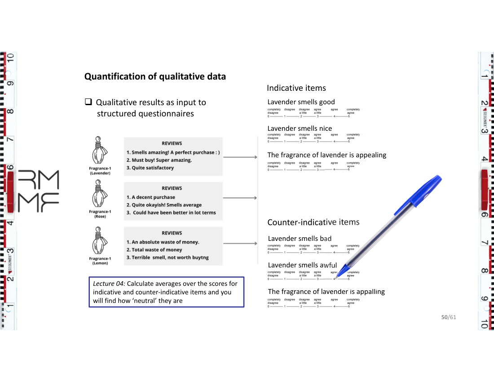
质性数据的量化（Quantification of qualitative data）
- 将质性结果（Qualitative results）作为结构化问卷（structured questionnaires）的输入
- 正指示题项（Indicative items）
- 薰衣草闻起来很好（Lavender smells good）
- 薰衣草闻起来不错（Lavender smells nice）
- 薰衣草的香气很迷人（The fragrance of lavender is appealing）
- 反指示题项（Counter-indicative items）
- 薰衣草闻起来很糟（Lavender smells bad）
- 薰衣草闻起来很难闻（Lavender smells awful）
- 薰衣草的香气令人作呕（The fragrance of lavender is appalling）
第 04 讲预告（Lecture 04）：计算正指示题项（indicative items）和反指示题项（counter-indicative items）得分的均值（averages），你就会发现它们有多「中性（neutral）」
英文检索原文（公式与版式请看左侧原图）
Quantification of qualitative data Qualitative results as input to structured questionnaires Indicative items Counter-indicative items Lavender smells good Lavender smells nice The fragrance of lavender is appealing Lavender smells bad Lavender smells awful The fragrance of lavender is appalling Lecture 04: Calculate averages over the scores for indicative and counter-indicative items and you will find how ‘neutral’ they are 50/61

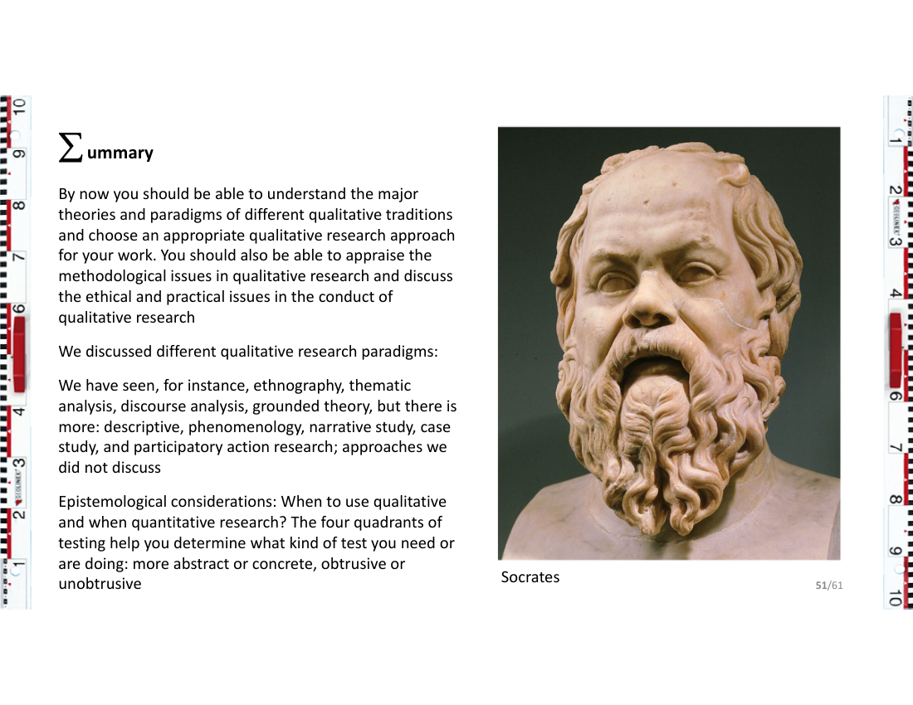
总结（∑ummary）
至此，你应当能够理解不同质性传统（qualitative traditions）的主要理论（theories）与范式（paradigms），并为你的工作选择恰当的质性研究路径（qualitative research approach）。你也应当能够评估质性研究（qualitative research）中的方法学问题（methodological issues），并讨论开展质性研究（qualitative research）时的伦理（ethical）与实务问题。
我们讨论了不同的质性研究范式（qualitative research paradigms）：例如，我们已经看过了民族志（ethnography）、主题分析（thematic analysis）、话语分析（discourse analysis）、扎根理论（grounded theory），但还有更多：描述性研究（descriptive）、现象学（phenomenology）、叙事研究（narrative study）、个案研究（case study）以及参与式行动研究（participatory action research）；这些是我们未讨论的方法。
认识论考量（Epistemological considerations）：何时使用质性研究（qualitative），何时使用量化研究（quantitative research）？测试四象限（four quadrants of testing）帮助你确定你需要或正在进行哪种测试：更抽象（abstract）还是更具体（concrete），介入式（obtrusive）还是非介入式（unobtrusive）。
Socrates
英文检索原文（公式与版式请看左侧原图）
ummary By now you should be able to understand the major theories and paradigms of different qualitative traditions and choose an appropriate qualitative research approach for your work. You should also be able to appraise the methodological issues in qualitative research and discuss the ethical and practical issues in the conduct of qualitative research We discussed different qualitative research paradigms: We have seen, for instance, ethnography, thematic analysis, discourse analysis, grounded theory, but there is more: descriptive, phenomenology, narrative study, case study, and participatory action research; approaches we did not discuss Epistemological considerations: When to use qualitative and when quantitative research? The four quadrants of testing help you determine what kind of test you need or are doing: more abstract or concrete, obtrusive or unobtrusive Socrates 51/61

总结（∑ummary）
工作现场的民族志观察（Ethnographical observations）是非介入式（unobtrusive）且具体（concrete）的，人们不会注意到你在研究他们，但个案是单一的，且数据属于轶事性数据（anecdotal）。实验室实验（Lab experiments）是介入式（obtrusive）的，因此人们可能会因你的观察而产生偏差（biased），但个案数量众多，并且可以进行统计分析（analysed statistically）。
质性方法（Qualitative approaches）生成非数值数据（non-numerical data）（例如视频、使用故事），为你提供关于特定个案的深度洞见。量化测试（Quantitative tests）是数值型的（numerical）（例如速度、准确度），且可以在多个个案之间进行推广（generalised）。
我们得出结论：无论如何，质性论证（qualitative argument）实际上依然建立在数量之上：
提出的论据越多、越重要，一个人的论点就越有力。
Socrates
英文检索原文（公式与版式请看左侧原图）
ummary Ethnographical observations on the work floor are unobtrusive and concrete, people will not notice you study them but cases are singular and data are anecdotal. Lab experiments are obtrusive and so people may be biased by you observing them but cases are numerous and can be analysed statistically Qualitative approaches generate non-numerical data (e.g., videos, use stories), which give you specific insights into your particular case. Quantitative tests are numerical (e.g., speed, accuracy) and may be generalised over multiple cases We came to the conclusion that qualitative argument effectively rests on quantities regardless: The more and the more important arguments are raised, the stronger someone’s case Socrates 52/61

总结（∑ummary）
我们探讨了在质性研究（qualitative research）中需要仔细关注的一些方法学问题（methodological issues）：
- 研究者即工具（The researcher as instrument）
- 客观性（objectivity）与主观性（subjectivity）问题
- 在不同抽样程序（sampling procedures）下质性数据集（qualitative data set）的界定
- 自然情境（natural settings）研究、生活经历与敏感议题中的伦理（Ethics）问题
- 三角互证（triangulation）的可能性与问题
- 解释质性数据（qualitative data）与其说是一门科学（science），不如说是一门艺术
- 对质性数据（qualitative data）的解释在不同的质性研究传统（qualitative research traditions）中各不相同
- 通过编码（coding）实现量化（Quantification）
- 数据管理（data management）的严谨性（Rigor）：如何建立可信度（trustworthiness）与可信性（credibility）？
Socrates
英文检索原文（公式与版式请看左侧原图）
ummary We came across some of the methodological issues that need careful attention in qualitative research: The researcher as instrument Issues of objectivity and subjectivity The definition of a qualitative data set with different sampling procedures Ethics in studies in natural settings, life experiences, and sensitive topics Possibilities and issues in triangulation Interpreting qualitative data is an art rather than a science Interpreting qualitative data varies in different qualitative research traditions Quantification through coding Rigor in data management: How to establish trustworthiness and credibility? Socrates 53/61

考试样题（Exam Sample Item）
类别：「知识（Knowledge）」
Jaspers (2009) 指出，在应用程序的形成性测试（formative testing）期间，启发式测试（heuristic testing）可能是一个选项。与实验室实验（lab experiments）相比，启发式测试（heuristic testing）的界定特征是：
A. 它是一种低成本且快速的方式，让新手用户（naïve users）提供指导测试的经验法则（rules of thumb）
B. 它是一种缓慢但彻底的方式，让专家提供指导测试的经验法则（rules of thumb）
C. 它是一种缓慢但彻底的方式，让新手用户（naïve users）提供指导测试的经验法则（rules of thumb）
D. 它是一种低成本且快速的方式，让专家提供指导测试的经验法则（rules of thumb）
英文检索原文（公式与版式请看左侧原图）
Exam Sample Item Category “Knowledge” Jaspers (2009) states that during formative testing of an application, heuristic testing may be an option. In contrast to lab experiments, defining aspects of heuristic testing are: A It is a cheap and fast way to let naïve users offer rules of thumb that guide the test B It is a slow but thorough way to let experts offer rules of thumb that guide the test C It is a slow but thorough way to let naïve users offer rules of thumb that guide the test D It is a cheap and fast way to let experts offer rules of thumb that guide the test 54/61

考试样题（Exam Sample Item）
A. 它是一种低成本且快速的方式，让新手用户（naïve users）提供指导测试的经验法则（rules of thumb）
B. 它是一种缓慢但彻底的方式，让专家提供指导测试的经验法则（rules of thumb）
C. 它是一种缓慢但彻底的方式，让新手用户（naïve users）提供指导测试的经验法则（rules of thumb）
D. 它是一种低成本且快速的方式，让专家提供指导测试的经验法则（rules of thumb）
类别：「知识（Knowledge）」
Jaspers (2009) 指出，在应用程序的形成性测试（formative testing）期间，启发式测试（heuristic testing）可能是一个选项。与实验室实验（lab experiments）相比，启发式测试（heuristic testing）的界定特征是：
英文检索原文（公式与版式请看左侧原图）
Exam Sample Item A It is a cheap and fast way to let naïve users offer rules of thumb that guide the test B It is a slow but thorough way to let experts offer rules of thumb that guide the test C It is a slow but thorough way to let naïve users offer rules of thumb that guide the test D It is a cheap and fast way to let experts offer rules of thumb that guide the test Category “Knowledge” Jaspers (2009) states that during formative testing of an application, heuristic testing may be an option. In contrast to lab experiments, defining aspects of heuristic testing are: 55/61

考试样题（Exam Sample Item）
在 Lecture 03：质性方法（Qualitative methods） 中，我们讨论了开展访谈（interviews）的步骤。请指出以下做法最典型地对应哪种类型的访谈（interview）：
- 定义研究目标（research objectives）：清晰阐述你希望发现的内容。这将为制定访谈提纲（interview guide）提供依据
- 制定访谈提纲（interview guide）：编制一份提纲，列出需要涵盖的问题或主题清单。这些问题应为开放式（open-ended），以鼓励受访者给出详细回答，并留出追问（follow-up questions）的空间
- 预测试（Pilot test）：开展预访谈（pilot interview），以确保问题能按预期发挥作用，并在必要时对提纲进行调整
- 选择参与者（participants）：选择具备与你的研究问题（research question）相关知识或经验的参与者（participants）。抽样（Sampling）可以采用立意抽样（purposive）方式，旨在挑选能够提供深入见解的个体
- 开展访谈（interviews）：按提纲进行访谈（interviews），但保持灵活性，以便在新话题出现时进行探索或提出追问（follow-up questions）
- 数据分析（Analyse data）：将访谈（interviews）进行转录（Transcribe），并使用质性数据分析（qualitative data analysis）方法（例如主题分析（thematic analysis））来识别模式、主题与见解
- 报告研究发现：呈现你的研究发现，包括对所识别出的主题与模式的详细说明，并辅以参与者（participants）的直接引语（direct quotes）作为佐证
A. 开放式（Open-ended）
B. 半结构式（Semi-structured）
C. 结构式（Structured）
D. 聚焦式（Focused）
英文检索原文（公式与版式请看左侧原图）
Exam Sample Item In Lecture 03: Qualitative methods, we discussed the steps taken in conducting interviews. Please indicate for what type of interview the following approach is typical: Define research objectives: Clearly articulate what you aim to discover. This will inform the development of your interview guide Develop the interview guide: Create a guide that includes a list of questions or topics to be covered. These should be open-ended to encourage detailed responses and allow for follow-up questions Pilot test: Conduct a pilot interview to ensure questions work as intended and adjust the guide as necessary Select participants: Choose participants who have knowledge or experience relevant to your research question. Sampling can be purposive, aiming to select individuals who can provide in-depth insights Conduct interviews: Carry out the interviews, following the guide but remaining flexible to explore new topics or ask follow-up questions as they arise Analyse data: Transcribe the interviews and use qualitative data analysis methods, such as thematic analysis, to identify patterns, themes, and insights Report findings: Present your findings, including a detailed account of the themes and patterns identified, supported by direct quotes from participants A Open-ended C Structured B Semi-structured D Focused 56/61

考试样题（Exam Sample Item）
在 Lecture 03：质性方法（Qualitative methods） 中，我们讨论了开展访谈（interviews）的步骤。请指出以下做法最典型地对应哪种类型的访谈（interview）：
- 定义研究目标（research objectives）：清晰阐述你希望发现的内容。这将为制定访谈提纲（interview guide）提供依据
- 制定访谈提纲（interview guide）：编制一份提纲，列出需要涵盖的问题或主题清单。这些问题应为开放式（open-ended），以鼓励受访者给出详细回答，并留出追问（follow-up questions）的空间
- 预测试（Pilot test）：开展预访谈（pilot interview），以确保问题能按预期发挥作用，并在必要时对提纲进行调整
- 选择参与者（participants）：选择具备与你的研究问题（research question）相关知识或经验的参与者（participants）。抽样（Sampling）可以采用立意抽样（purposive）方式，旨在挑选能够提供深入见解的个体
- 开展访谈（interviews）：按提纲进行访谈（interviews），但保持灵活性，以便在新话题出现时进行探索或提出追问（follow-up questions）
- 数据分析（Analyse data）：将访谈（interviews）进行转录（Transcribe），并使用质性数据分析（qualitative data analysis）方法（例如主题分析（thematic analysis））来识别模式、主题与见解
- 报告研究发现：呈现你的研究发现，包括对所识别出的主题与模式的详细说明，并辅以参与者（participants）的直接引语（direct quotes）作为佐证
A. 开放式（Open-ended）
B. 半结构式（Semi-structured）
C. 结构式（Structured）
D. 聚焦式（Focused）
英文检索原文（公式与版式请看左侧原图）
Exam Sample Item In Lecture 03: Qualitative methods, we discussed the steps taken in conducting interviews. Please indicate for what type of interview the following approach is typical: Define research objectives: Clearly articulate what you aim to discover. This will inform the development of your interview guide Develop the interview guide: Create a guide that includes a list of questions or topics to be covered. These should be open-ended to encourage detailed responses and allow for follow-up questions Pilot test: Conduct a pilot interview to ensure questions work as intended and adjust the guide as necessary Select participants: Choose participants who have knowledge or experience relevant to your research question. Sampling can be purposive, aiming to select individuals who can provide in-depth insights Conduct interviews: Carry out the interviews, following the guide but remaining flexible to explore new topics or ask follow-up questions as they arise Analyse data: Transcribe the interviews and use qualitative data analysis methods, such as thematic analysis, to identify patterns, themes, and insights Report findings: Present your findings, including a detailed account of the themes and patterns identified, supported by direct quotes from participants A Open-ended C Structured B Semi-structured D Focused 57/61

参考文献（References）
- Clarke, V., & Braun, V. (2022). Thematic analysis, a practical guide. Thousand Oaks, CA: Sage.
- Glaser, B. G., & Strauss, A. L. (1967). The discovery of grounded theory: strategies for qualitative research. New York: Aldine de Gruyter.
- Ho, L., & Limpaecher, A. (2023, November 1). What is Discourse Analysis? An Introduction & Guide Essential Guide to Coding Qualitative Data. Delve. https://delvetool.com/blog/discourse-analysis
- Jaspers, M. W. M. (2009). A comparison of usability methods for testing interactive health technologies: Methodological aspects and empirical evidence. International Journal of Medical Informatics, 78, 340-353.
- McGrath, J. E. (1995). Methodology matters: Doing research in the behavioral and social sciences. In R. M. Baecker, et al. (Eds.), Readings in Human–Computer Interaction (pp. 152-169). Morgan Kaufmann.
- O’Grady, L., Witteman, H., Bender, J. L., Urowitz, S., Wiljer, D., & Jadad, A. R. (2009). Measuring the impact of a moving target: Towards a dynamic framework for evaluating collaborative adaptive interactive technologies. Journal of Medical Internet Research, 11, e20.
- Van den Haak, M. J., De Jong, M. D. T., & Schellens, P. J. (2009). Evaluating municipal websites: A methodological comparison of three think-aloud variants. Government Information Quarterly, 26(1), 193-202.
英文检索原文（公式与版式请看左侧原图）
Clarke, V., & Braun, V. (2022). Thematic analysis, a practical guide. Thousand Oaks, CA: Sage. Glaser, B. G., & Strauss, A. L. (1967). The discovery of grounded theory: strategies for qualitative research. New York: Aldine de Gruyter. Ho, L., & Limpaecher, A. (2023, November 1). What is Discourse Analysis? An Introduction & Guide Essential Guide to Coding Qualitative Data. Delve. https://delvetool.com/blog/discourse-analysis Jaspers, M. W. M. (2009). A comparison of usability methods for testing interactive health technologies: Methodological aspects and empirical evidence. International Journal of Medical Informatics, 78, 340-353. McGrath, J. E. (1995). Methodology matters: Doing research in the behavioral and social sciences. In R. M. Baecker, et al. (Eds.), Readings in Human–Computer Interaction (pp. 152-169). Morgan Kaufmann. O’Grady, L., Witteman, H., Bender, J. L., Urowitz, S., Wiljer, D., & Jadad, A. R. (2009). Measuring the impact of a moving target: Towards a dynamic framework for evaluating collaborative adaptive interactive technologies. Journal of Medical Internet Research, 11, e20. Van den Haak, M. J., De Jong, M. D. T., & Schellens, P. J. (2009). Evaluating municipal websites: A methodological comparison of three think-aloud variants. Government Information Quarterly, 26(1), 193-202. References 58/61

参考文献（References）
教材（Textbook）
- Denzin, N.K., & Lincoln, Y.S. (Eds.). (2012). The Landscape of Qualitative Research (4th edition). SAGE Publications.
关于实用数据收集（data collection）与数据分析（data analysis）的参考书
- Aurini, J.D., Heath, M., & Howells, M. (2022). The How To of Qualitative Research. (2nd Edition). SAGE Publications.
- Saldana, J. (2021). The Coding Manual for Qualitative Researchers. (4th edition). SAGE Publications.
关于不同质性研究传统（qualitative research traditions）的参考书
- Chevalier, J.M., & Buckles, D.J. (2019). Participatory Action Research: Theory and Methods for Engaged Inquiry. Routledge.
- Corbin, J.M., & Strauss, A.L. (2014). Basics of qualitative research: Techniques and procedures for developing grounded theory. (4th edition). SAGE Publications.
- Creswell, J.W., & Poth C.N. (2017). Qualitative Inquiry and Research Design: Choosing Among Five Approaches. (4th edition). SAGE Publications.
- Fetterman, D.M. (2019). Ethnography: Step-by-Step. (4th edition). SAGE Publications.
- Kim, J.H. (2015). Understanding Narrative Inquiry: The Crafting and Analysis of Stories as Research. (1st edition). SAGE Publications.
- Yin R.K. (2017). Case Study Research and Applications: Design and Methods (6th edition). SAGE Publications.
- Zahavi, D. (2018). Phenomenology: The Basics. (1st edition). Routledge.
英文检索原文（公式与版式请看左侧原图）
Textbook Denzin, N.K., & Lincoln, Y.S. (Eds.). (2012). The Landscape of Qualitative Research (4th edition). SAGE Publications. Reference books about practical data collection and data analysis Aurini, J.D., Heath, M., & Howells, M. (2022). The How To of Qualitative Research. (2nd Edition). SAGE Publications. Saldana, J. (2021). The Coding Manual for Qualitative Researchers. (4th edition). SAGE Publications. Reference books about different qualitative research traditions Chevalier, J.M., & Buckles, D.J. (2019). Participatory Action Research: Theory and Methods for Engaged Inquiry. Routledge. Corbin, J.M., & Strauss, A.L. (2014). Basics of qualitative research: Techniques and procedures for developing grounded theory. (4th edition). SAGE Publications. Creswell, J.W., & Poth C.N. (2017). Qualitative Inquiry and Research Design: Choosing Among Five Approaches. (4th edition). SAGE Publications. Fetterman, D.M. (2019). Ethnography: Step-by-Step. (4th edition). SAGE Publications. Kim, J.H. (2015). Understanding Narrative Inquiry: The Crafting and Analysis of Stories as Research. (1st edition). SAGE Publications. Yin R.K. (2017). Case Study Research and Applications: Design and Methods (6th edition). SAGE Publications. Zahavi, D. (2018). Phenomenology: The Basics. (1st edition). Routledge. References 59/61

参考文献（References）
期刊文章
International Journal of Qualitative Methods（强烈推荐该期刊；它记录了不同学科中关于质性研究方法论（qualitative research methodology）的讨论与争论）
- Chubb, L. A. (2023). Me and the Machines: Possibilities and Pitfalls of Using Artificial Intelligence for Qualitative Data Analysis. International Journal of Qualitative Methods, 22. https://doi.org/10.1177/16094069231193593
- Ebneyamini, S., & Sadeghi Moghadam, M. R. (2018). Toward Developing a Framework for Conducting Case Study Research. International Journal of Qualitative Methods, 17(1). https://doi.org/10.1177/1609406918817954
- Nasheeda, A., Abdullah, H. B., Krauss, S. E., & Ahmed, N. B. (2019). Transforming Transcripts Into Stories: A Multimethod Approach to Narrative Analysis. International Journal of Qualitative Methods, 18. https://doi.org/10.1177/1609406919856797
- Nelson, H. J., Bally, J. M. G., Spurr, S., Foulds, H., & de Padua, A. (2023). Integrating Constructivist Grounded Theory with a Patient-Oriented Research Approach to Enhance Health Promotion Research. International Journal of Qualitative Methods, 22. https://doi.org/10.1177/16094069231218657
- Peltier, C. (2018). An Application of Two-Eyed Seeing: Indigenous Research Methods With Participatory Action Research. International Journal of Qualitative Methods, 17(1). https://doi.org/10.1177/1609406918812346
- Penner, J. L., & McClement, S. E. (2008). Using Phenomenology to Examine the Experiences of Family Caregivers of Patients with Advanced Head and Neck Cancer: Reflections of a Novice Researcher. International Journal of Qualitative Methods, 7(2), 92-101. https://doi.org/10.1177/160940690800700206
- Proches, C. N. G., & Bodhanya, S. (2015). An Application of Soft Systems Methodology in the Sugar Industry. International Journal of Qualitative Methods, 14(1), 1-15. https://doi.org/10.1177/160940691501400101
- Simmonds, S., Roux, C., & Avest, I. ter. (2015). Blurring the Boundaries between Photovoice and Narrative Inquiry: A Narrative-Photovoice Methodology for Gender-Based Research. International Journal of Qualitative Methods, 14(3), 33-49. https://doi.org/10.1177/160940691501400303
- Turner, P., Rushby, T., Gauthier, S., James, P., Bahaj, A., Aragon, V., Sweetnam, T., & Ellis, D. (2021). An Online ‘Face to Face’ Focus Group Approach for Understanding How Household Energy Use and Green Investment Decisions Differ by Personality Traits. International Journal of Qualitative Methods, 20. https://doi.org/10.1177/16094069211038312
英文检索原文（公式与版式请看左侧原图）
Journal articles International Journal of Qualitative Methods (this journal is highly recommended; it records the discussion and debate of qualitative research methodology in various disciplines) Chubb, L. A. (2023). Me and the Machines: Possibilities and Pitfalls of Using Artificial Intelligence for Qualitative Data Analysis. International Journal of Qualitative Methods, 22. https://doi.org/10.1177/16094069231193593 Ebneyamini, S., & Sadeghi Moghadam, M. R. (2018). Toward Developing a Framework for Conducting Case Study Research. International Journal of Qualitative Methods, 17(1). https://doi.org/10.1177/1609406918817954 Nasheeda, A., Abdullah, H. B., Krauss, S. E., & Ahmed, N. B. (2019). Transforming Transcripts Into Stories: A Multimethod Approach to Narrative Analysis. International Journal of Qualitative Methods, 18. https://doi.org/10.1177/1609406919856797 Nelson, H. J., Bally, J. M. G., Spurr, S., Foulds, H., & de Padua, A. (2023). Integrating Constructivist Grounded Theory with a Patient-Oriented Research Approach to Enhance Health Promotion Research. International Journal of Qualitative Methods, 22. https://doi.org/10.1177/16094069231218657 Peltier, C. (2018). An Application of Two-Eyed Seeing: Indigenous Research Methods With Participatory Action Research. International Journal of Qualitative Methods, 17(1). https://doi.org/10.1177/1609406918812346 Penner, J. L., & McClement, S. E. (2008). Using Phenomenology to Examine the Experiences of Family Caregivers of Patients with Advanced Head and Neck Cancer: Reflections of a Novice Researcher. International Journal of Qualitative Methods, 7(2), 92-101. https://doi.org/10.1177/160940690800700206 Proches, C. N. G., & Bodhanya, S. (2015). An Application of Soft Systems Methodology in the Sugar Industry. International Journal of Qualitative Methods, 14(1), 1-15. https://doi.org/10.1177/160940691501400101 Simmonds, S., Roux, C., & Avest, I. ter. (2015). Blurring the Boundaries between Photovoice and Narrative Inquiry: A Narrative-Photovoice Methodology for Gender-Based Research. International Journal of Qualitative Methods, 14(3), 33-49. https://doi.org/10.1177/160940691501400303 Turner, P., Rushby, T., Gauthier, S., James, P., Bahaj, A., Aragon, V., Sweetnam, T., & Ellis, D. (2021). An Online ‘Face to Face’ Focus Group Approach for Understanding How Household Energy Use and Green Investment Decisions Differ by Personality Traits. International Journal of Qualitative Methods, 20. https://doi.org/10.1177/16094069211038312 References 60/61

参考文献（References）
关于设计、科学与工程领域中质性研究（qualitative research）的其他期刊文章
- Ballegaard, E., Kajita, M., & Nicholas, P. (2021). Users' Experience in Digital Architectural Design: Combining Qualitative Research Methods with a Generative Model. Studies in Health Technology and Informatics, 282:315-332. doi: 10.3233/SHTI210407.
- Fross, K., Winnicka-Jaslowska D., Guminska A., Masly, D., & Sitek, M. (2015). Use of qualitative research in architectural design and evaluation of the built environment. Procedia Manufacturing, 3, 1625-1632. https://doi.org/10.1016/j.promfg.2015.07.453.
- Jentzsch, S. & Hochgeschwender, N. (2021). A qualitative study of Machine Learning practices and engineering challenges in Earth Observation" it - Information Technology, 63(4), 235-247. https://doi.org/10.1515/itit-2020-0045
- Lorenzo-Romero, C., Andrés-Martínez, M.-E., Cordente-Rodríguez, M., & Gómez-Borja, M. Á. (2021). Active Participation of E-Consumer: A Qualitative Analysis From Fashion Retailer Perspective. SAGE Open, 11(1). https://doi.org/10.1177/2158244020979169
- Steinmetz, K. F., & Holt, T. J. (2023). Falling for Social Engineering: A Qualitative Analysis of Social Engineering Policy Recommendations. Social Science Computer Review, 41(2), 592-607. https://doi.org/10.1177/08944393221117501
- Szajnfarber, Z., & Gralla, E. (2017). Qualitative methods for engineering systems: Why we need them and how to use them. System Engineering, 20, 497–511. https://doi.org/10.1002/sys.21412
英文检索原文（公式与版式请看左侧原图）
Other journal articles about qualitative research in design, science, and engineering Ballegaard, E., Kajita, M., & Nicholas, P. (2021). Users' Experience in Digital Architectural Design: Combining Qualitative Research Methods with a Generative Model. Studies in Health Technology and Informatics, 282:315-332. doi: 10.3233/SHTI210407. Fross, K., Winnicka-Jaslowska D., Guminska A., Masly, D., & Sitek, M. (2015). Use of qualitative research in architectural design and evaluation of the built environment. Procedia Manufacturing, 3, 1625-1632. https://doi.org/10.1016/j.promfg.2015.07.453. Jentzsch, S. & Hochgeschwender, N. (2021). A qualitative study of Machine Learning practices and engineering challenges in Earth Observation" it - Information Technology, 63(4), 235-247. https://doi.org/10.1515/itit-2020-0045 Lorenzo-Romero, C., Andrés-Martínez, M.-E., Cordente-Rodríguez, M., & Gómez-Borja, M. Á. (2021). Active Participation of E- Consumer: A Qualitative Analysis From Fashion Retailer Perspective. SAGE Open, 11(1). https://doi.org/10.1177/2158244020979169 Steinmetz, K. F., & Holt, T. J. (2023). Falling for Social Engineering: A Qualitative Analysis of Social Engineering Policy Recommendations. Social Science Computer Review, 41(2), 592-607. https://doi.org/10.1177/08944393221117501 Szajnfarber, Z., & Gralla, E. (2017). Qualitative methods for engineering systems: Why we need them and how to use them. System Engineering, 20, 497–511. https://doi.org/10.1002/sys.21412 References 61